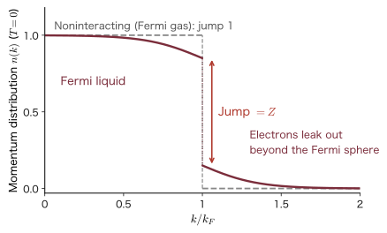
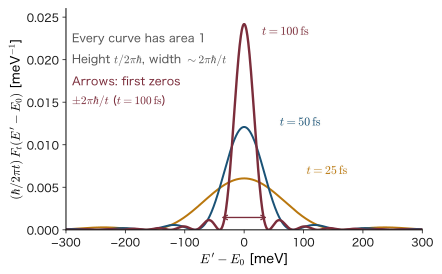
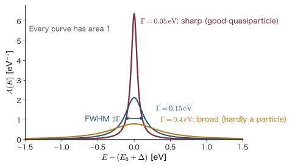
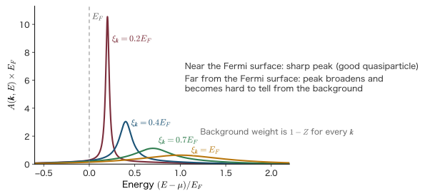

Chapter 27Introduction to Quasiparticles — Describing Interacting Many-Body Systems in Terms of “Particles”
In Part III (Chapters 12–20), we explained the properties of solids in terms of two kinds of “mutually independent particles.” One is the Bloch electron, which runs through a periodic potential independently of the other electrons (Chapters 15–18); the other is the phonon, the quantum of lattice vibration, which in the harmonic approximation separates into mutually independent oscillators (Chapters 13 and 14). These two alone explained a surprising amount: the specific heat, conductivity, and Hall coefficient of metals, the carrier concentration of semiconductors, and even the $T^3$ law for the specific heat of crystals. However, the Coulomb repulsion between electrons is several eV, as large as the kinetic energy of the electrons. Lattice vibrations, too, deviate from harmonic oscillators once their amplitude becomes large. If the particles really interact strongly, why did the independent-particle picture work so well? And what happens when it does not work?—this is the question of Part V, “Properties of Solids (Advanced Topics),” as a whole.
The answer that solid-state physics gives to this question is the idea of the quasiparticle. Even in a system of many interacting particles, a low-energy excitation behaves as “a particle that drags the surrounding particles along with it, becomes a little heavier, and has a slightly short lifetime.” An electron is dressed in a screening cloud or a lattice distortion and becomes a quasielectron or a polaron. Lattice vibrations remain phonons, but they collide with one another and acquire a finite lifetime. Because the language of “particles” is retained while the interaction is taken into account, the properties of an interacting system, too, can be described in terms of the type, energy, lifetime, and statistics of the quasiparticles. Mott insulators, thermal expansion, heat conduction, the absorption lines of excitons, superconductivity—phenomena that could not be explained in Part III are all organized in this language.
This chapter is the entrance to Part V, and it prepares the vocabulary and the map used in the later chapters. First, we organize the Hamiltonian of a solid by means of the Born–Oppenheimer approximation and an expansion in atomic displacements, and see where the three interactions—the electron–electron interaction, the electron–phonon interaction, and the phonon–phonon interaction—come from (the starting points of Chapters 28, 29, and 30). Next, we introduce the minimal tools for reading an interaction as a “process”: creation and annihilation operators and how to read Feynman diagrams. In this book, Feynman diagrams are used not as calculation rules but only as pictures of the individual terms of second-order perturbation theory. On that basis, we derive completely the self-energy, which expresses the fact that an interaction shifts the energy of a quasiparticle (real part) and makes its lifetime finite (imaginary part), using a model in which a single level is coupled to a continuum of states, with second-order perturbation theory and Fermi’s golden rule. The relation between the linewidth $2\Gamma$ and the lifetime $\tau=\hbar/2\Gamma$ is also derived from the definitions, so that the factor of 2 is not mixed up.
Finally, we collect the quasiparticles that appear in solids (quasielectrons and holes, phonons, plasmons, magnons, excitons, polarons, polaritons, Cooper pairs, solitons, …) into a single table and an energy scale, and show from which interaction each arises, what properties it produces, and in which chapter it is treated. We then see how the dispersion, linewidth, and mass of quasiparticles are measured in experiments such as angle-resolved photoemission spectroscopy (ARPES), neutron scattering, and Raman spectroscopy. This chapter keeps the burden of formulas light and uses many pictures, words, and tables, but the derivations in Sections 27.4 and 27.5 are the foundation used by all the later chapters, so we have written them without skipping a single line.
- What the independent-particle picture (free electrons, Bloch electrons, harmonic phonons) could explain, a list of the phenomena it cannot explain, and the chapter of Part V that treats each of them
- The distinction between quasiparticles (dressed particles) and collective excitations, the term elementary excitation that covers both, and the broad and narrow meanings of “quasiparticle”
- The main points of Landau’s Fermi-liquid theory: the one-to-one correspondence with free electrons, the lifetime $1/\tau\propto(E-E_F)^2+(\pi k_BT)^2$, the effective mass $m^*$, and the renormalization factor $Z$
- How to extract the three kinds of interaction from the full Hamiltonian of a solid by the Born–Oppenheimer approximation and an expansion in the atomic displacement $u$, and the typical magnitude of each
- Creation and annihilation operators: deriving $a^\dagger\ket{n}=\sqrt{n+1}\ket{n+1}$ from $[a,a^\dagger]=1$; the electron relation $\{c,c^\dagger\}=1$ and the Pauli principle $(c^\dagger)^2=0$
- Reading the interaction terms $g\,c^\dagger_{\kk+\qq}c_\kk(a_\qq+a^\dagger_{-\qq})$, $Un_\uparrow n_\downarrow$, and $\Phi^{(3)}a^\dagger a^\dagger a$ as “processes”
- How to read Feynman diagrams (lines, vertices, external lines, internal lines, conservation laws), and the fact that a diagram is a picture of each term of second-order perturbation theory
- The complete derivation of the self-energy $\Sigma=\Delta-i\Gamma$: the second-order perturbation shift $\Delta$, the decay rate from the golden rule and $\Gamma=\pi\abs{V}^2\rho$, the Lorentzian spectral function, the full width at half maximum $2\Gamma$, and the lifetime $\tau=\hbar/2\Gamma$
- A list of the quasiparticles in solids (statistics, energy, origin, properties, chapter), a map from interactions to properties, and energy conversion (meV, cm$^{-1}$, THz, K)
- What ARPES, neutron scattering, Raman scattering, optical absorption, tunneling spectroscopy, the de Haas–van Alphen effect, and specific heat tell us about quasiparticles
27.1 The Independent-Particle Picture and Beyond
27.1.1 The success of Part III — three independent-particle models
Let us look back at the models we used in Part III. Every one of them rests on the independent-particle picture: many particles that move on their own, each without influencing the others.
| Model | Kept | Discarded | What it explained | Chapters of this book |
|---|---|---|---|---|
| Free electron model | Kinetic energy of the electrons, Pauli principle | Periodic potential of the ions, Coulomb repulsion between electrons | Electronic specific heat $C=\gamma T$, Drude conductivity, Wiedemann–Franz law, Hall coefficient (alkali metals) | Chapter 15 (Section 15.5, etc.) |
| Bloch electrons (band theory) | Periodic potential of the ions (repulsion between electrons as a mean field) | Deviations from the average (electron correlation), lattice vibrations | Distinction among metals, semiconductors, and insulators; effective mass; holes; Fermi surface | Chapters 16–18 (Section 16.1, etc.) |
| Harmonic phonons | Potential up to second order in the atomic displacements | Third and higher orders (anharmonic terms), coupling to electrons | Debye law of the lattice specific heat, phonon dispersion, neutron scattering | Chapters 13 and 14 (Section 13.8, etc.) |
What the three models have in common is that the Hamiltonian splits into a sum of one-particle Hamiltonians. For free electrons it is $\sum_i \pp_i^2/2m$; for Bloch electrons it is $\sum_i[\pp_i^2/2m+V_{\rm per}(\rr_i)]$; for harmonic phonons it is the sum of independent oscillators, $\sum_{\qq\nu}\hbar\omega_{\qq\nu}(n_{\qq\nu}+\tfrac12)$ (the one-electron energy that we wrote $\epsilon_\kk$ in the notation up to Section 15.5 of Chapter 15 is written $E(\kk)$ in Part V). Because the Hamiltonian splits into a sum, a many-particle state is fixed simply by specifying how many particles occupy each one-particle state, and the total energy is the sum of the one-particle energies. The many-body problem reduces to a one-body problem, and that is why the calculations could be carried out.
27.1.2 What we have neglected — a Coulomb repulsion of the order of an eV
What the independent-particle picture discarded is by no means small. Let us first estimate the magnitude of the Coulomb repulsion between electrons.
Example 27.1: Coulomb energy and kinetic energy of electrons in a metal
The density of conduction electrons in Cu is $n=8.47\times10^{28}\,\mathrm{m^{-3}}$. (1) Regarding the volume per electron as a sphere, find its radius $r_sa_0$ ($a_0=0.52918\,\text{Å}$ is the Bohr radius, and $r_s$ is a dimensionless measure of the density). (2) Compare the Coulomb energy $e^2/(4\pi\epsilon_0r_sa_0)$ of two electrons separated by the distance $r_sa_0$ with the Fermi energy $E_F$. (3) Find the Thomas–Fermi screening length $1/k_{\rm TF}$ and compare it with $r_sa_0$.
Solution. (1) Let the volume of a sphere of radius $r_sa_0$ equal the volume per electron, $1/n$:
$$ \frac{4\pi}{3}(r_sa_0)^3=\frac{1}{n} \quad\Longrightarrow\quad r_sa_0=\left(\frac{3}{4\pi n}\right)^{1/3}=\left(\frac{3}{4\pi\times8.47\times10^{28}\,\mathrm{m^{-3}}}\right)^{1/3}=1.413\times10^{-10}\,\mathrm{m} $$Hence $r_sa_0=1.413\,\text{Å}$ and $r_s=1.413/0.52918=2.67$.
(2) The quantity $e^2/(4\pi\epsilon_0a_0)$ is the unit of atomic energy and is called the Hartree energy. Its value is $27.211\,\mathrm{eV}$, so
$$ \frac{e^2}{4\pi\epsilon_0r_sa_0}=\frac{27.211\,\mathrm{eV}}{r_s}=\frac{27.211}{2.67}\,\mathrm{eV}=10.2\,\mathrm{eV} $$On the other hand, the Fermi wavenumber is $k_F=(3\pi^2n)^{1/3}$. Substituting $n=3/[4\pi(r_sa_0)^3]$ gives $k_F=(9\pi/4)^{1/3}/(r_sa_0)$ $=1.919/(1.413\,\text{Å})=1.358\,\text{Å}^{-1}$. Using $\hbar^2/m=7.620\,\mathrm{eV\,\text{Å}^2}$, we obtain
$$ E_F=\frac{\hbar^2k_F^2}{2m}=\frac{7.620\,\mathrm{eV\,\text{Å}^2}\times(1.358\,\text{Å}^{-1})^2}{2}=7.03\,\mathrm{eV} $$The ratio is $10.2/7.03=1.45$. The Coulomb energy is of the same order of magnitude as the kinetic energy, and is in fact larger. Looking at the dependence on $r_s$, the Coulomb energy is proportional to $1/r_s$ and the kinetic energy to $1/r_s^2$, so the ratio is proportional to $r_s$, namely $0.543r_s$ (the lower the density, the stronger the interaction is in relative terms).
(3) The Thomas–Fermi screening wavenumber is given, in terms of the density of states at the Fermi level (per unit volume, both spins) $N_{\rm tot}(E_F)=3n/2E_F$, by $k_{\rm TF}^2=e^2N_{\rm tot}(E_F)/\epsilon_0=3ne^2/(2\epsilon_0E_F)$ (the screening formula of Section 21.3 of Chapter 21). Substituting the numbers gives
$$ k_{\rm TF}^2=\frac{3\times(8.47\times10^{28})\times(1.602\times10^{-19})^2}{2\times(8.854\times10^{-12})\times(7.03\times1.602\times10^{-19})}\,\mathrm{m^{-2}}=3.27\times10^{20}\,\mathrm{m^{-2}} $$so $k_{\rm TF}=1.81\times10^{10}\,\mathrm{m^{-1}}$ and $1/k_{\rm TF}=0.553\,\text{Å}$. This is shorter than $r_sa_0=1.41\,\text{Å}$, the rough measure of the mean distance between electrons. ∎ The Coulomb energy between electrons is of the order of an eV and comparable to the kinetic energy, but because the other electrons retreat and build a screening cloud, the charge of a single electron becomes almost invisible from distances beyond about $0.5\,\text{Å}$. This is one reason why the independent-particle picture works well in metals even though the interaction is strong.
Why could such a large Coulomb repulsion be ignored in Part III? There are three reasons.
Why? The independent-particle picture works even though the repulsion between electrons is large
- The mean field is already included in the bands. The mean electrostatic potential produced by all the other electrons (the Hartree field) and the effect of exchange are absorbed into the periodic potential felt by a Bloch electron. This is why the bands from first-principles calculations (density functional theory) agree well with experiment; all that was discarded is the “deviation from the average” (electron correlation).
- Screening. As we saw in Example 27.1, in a metal the other electrons retreat and create a hole of positive charge (the screening cloud), which cancels the long-range Coulomb field of an electron at a distance of about $0.5\,\text{Å}$. The electron moves as “a nearly neutral particle wearing a screening cloud” (Section 21.3 of Chapter 21).
- Pauli principle. Even if an electron near the Fermi surface tries to collide with another electron, the states it could go to are almost all filled, so scattering is strongly suppressed. As a result, the frequency of electron–electron scattering is small, proportional to $(k_BT/E_F)^2$ (Section 15.9 of Chapter 15; we look at this in detail in Section 27.2).
Conversely, when any one of these three ceases to work, the independent-particle picture breaks down. If electrons are localized near the atoms and the kinetic energy (the bandwidth) is small, as for $d$ and $f$ orbitals, correlations that cannot be expressed by the mean field take the leading role (Chapter 28). If the lattice is soft, an electron distorts the lattice and becomes confined around itself (Chapters 29 and 31).
The same can be said of the lattice. In the harmonic approximation we discarded the terms of third and higher order in the atomic displacements (the anharmonic terms). Because the anharmonic terms are small compared with the vibrational energy, the phonon frequencies agree well with experiment. However, there are phenomena that cannot be explained without the anharmonic terms. The prime example is thermal expansion.
Example 27.2: A crystal of harmonic oscillators does not expand thermally
Let $x$ be the displacement of an atom in one dimension, and let the potential be harmonic, $V(x)=\tfrac12Kx^2$. Show in two ways that the mean displacement $\langle x\rangle$ at temperature $T$ is 0 independently of temperature: (1) by classical statistics, and (2) by the symmetry of the quantum-mechanical eigenstates $\ket{n}$. State qualitatively what changes when the term $-bx^3$ is added to the potential ($b\gt0$ is the coefficient of the cubic anharmonicity).
Solution. (1) In classical statistics, averaging with the Boltzmann weight $\ee^{-V(x)/k_BT}$ gives
$$ \langle x\rangle=\frac{\displaystyle\int_{-\infty}^{\infty}x\,\ee^{-Kx^2/2k_BT}\,\dd x}{\displaystyle\int_{-\infty}^{\infty}\ee^{-Kx^2/2k_BT}\,\dd x} $$The integrand of the numerator is an odd function of $x$ (its sign changes when $x$ is replaced by $-x$), so its integral over a symmetric interval is 0. Hence $\langle x\rangle=0$, independent of $T$.
(2) The eigenfunction $\psi_n(x)$ of the harmonic oscillator is either an even or an odd function (even if $n$ is even, odd if it is odd), and $\abs{\psi_n(x)}^2$ is an even function in either case. Therefore $\bra{n}x\ket{n}=\int x\abs{\psi_n}^2\dd x=0$. The thermal average $\langle x\rangle=\sum_n p_n\bra{n}x\ket{n}$ ($p_n$ is the Boltzmann weight) is then also 0.
When $-bx^3$ is added, the potential becomes gentle on the $x\gt0$ side and steep on the $x\lt0$ side. The atom stays longer on the gentle side ($x\gt0$), so $\langle x\rangle\gt0$, and it increases with temperature. ∎ Thermal expansion occurs only when anharmonicity (the source of the phonon–phonon interaction) is present. We carry out the calculation in Example 27.7 and in Chapter 30. In Chapter 14, Section 14.6, we reached the same conclusion from the volume dependence of the free energy (the Grüneisen constant).
27.1.3 Phenomena that the independent-particle picture cannot explain — a map of Part V
Table 27.2 summarizes the phenomena that the independent-particle picture cannot explain (or explains insufficiently), together with the interactions responsible and the chapters of Part V that treat them. All of them are important properties of solids.
| Phenomenon | In the independent-particle picture | Responsible interaction | Chapter |
|---|---|---|---|
| Thermal expansion | Zero in the harmonic approximation (Example 27.2) | Phonon–phonon (anharmonicity) | Chapter 30 (Chapter 14, Section 14.6) |
| Finite lattice thermal conductivity | Infinite, because phonons do not collide | Phonon–phonon (Umklapp process) | Chapter 30 (Chapter 14, Section 14.7) |
| Linewidths of Raman lines and infrared absorption | Zero width, because the phonon lifetime is infinite | Phonon–phonon, electron–phonon | Chapters 30 and 34 |
| Temperature dependence of the electrical resistance of metals ($\rho\propto T$ at high temperatures) | Bloch electrons in a perfect crystal are not scattered | Electron–phonon | Chapter 29 (Chapters 21 and 22) |
| Enhancement of $\gamma$ in the electronic specific heat (mass enhancement) | $\gamma$ is determined by the density of states of the band | Electron–phonon, electron–electron | Chapter 29, Chapter 28 |
| Mott insulators (NiO, CoO, etc.) | Should be metals, because the $d$ band is only partly filled | Electron–electron (strong correlation) | Chapter 28 |
| Exciton absorption lines (sharp lines below the gap) | Absorption starts at the gap $E_g$ | Electron–hole Coulomb attraction | Chapter 31, Chapter 33 |
| Polarons (a charge distorts the lattice and becomes heavy) | The effective mass is determined by the band alone | Electron–phonon (strong coupling) | Chapter 31 |
| LO–TO splitting in polar crystals | With short-range forces alone, LO and TO can be degenerate | Ionic displacement and the macroscopic electric field (coupling to light) | Chapter 32 |
| Structural and ferroelectric phase transitions (soft mode) | Phonons in the harmonic approximation do not change with temperature | Electron–phonon, phonon–phonon | Chapters 29 and 30 (Chapter 19) |
| Peierls transition and charge-density waves | A one-dimensional metal remains a metal | Electron–phonon | Chapter 35, Chapter 29 |
| Superconductivity | The electrical resistance merely approaches the residual resistivity as $T\to0$ | Electron–phonon (attraction mediated by phonons) | Chapter 29, Chapter 37 |
| Anderson localization, Mott transition in disordered systems | (Neither disorder nor correlation is present) | Disorder, electron–electron | Chapter 36 |
Figure 27.2 rearranges the chapters in the rightmost column of Table 27.2 by type of interaction. Chapter 28 is the foundation for the electron–electron interaction, Chapter 29 for the electron–phonon interaction, and Chapter 30 for the phonon–phonon interaction, while Chapters 31–37 treat the properties that arise from combinations of these.
In Section 27.6 we redraw the map of Figure 27.2 once more in the form “interaction → quasiparticle → physical property.” Before that, let us see what can be called a “particle” in an interacting system (Section 27.2) and where the three interactions come from in the Hamiltonian (Section 27.3).
27.2 What Is a Quasiparticle? — Dressed Particles and Elementary Excitations
27.2.1 Dressed particles — a familiar analogy and its limits
When a single particle moves through a crowd of interacting particles, the surrounding particles are pushed or pulled by it and change their arrangement. The moving particle therefore carries this “surrounding deformation” along with it. It becomes harder to move (heavier) by the amount of the deformation it drags along, and part of the deformation is left behind and spreads out (the particle loses energy). A particle wrapped in the surrounding deformation as a “cloud” in this way is called a dressed particle. A particle before it is dressed is called a bare particle.
Classical mechanics offers a convenient example. When a sphere is moved through water, it pushes the surrounding water aside, and the water sets up a flow that wraps around to the back of the sphere. To accelerate the sphere, we must increase not only the kinetic energy of the sphere itself but also the kinetic energy of this flow. A calculation for a perfect fluid (a flow with no viscosity and no vortices) shows that the apparent mass of a sphere of radius $R$ accelerated in water is
$$ m_{\rm eff}=m+\frac12\rho_fV,\qquad V=\frac{4\pi}{3}R^3 $$($\rho_f$ is the density of the fluid). The increment $\tfrac12\rho_fV$ is called the added mass. It is exactly half the mass of the fluid displaced by the sphere.
Example 27.3: Added mass of a bubble — a “nearly massless particle” becomes heavy
An air bubble of radius $1\,\mathrm{mm}$ is in water ($\rho_f=1.00\times10^3\,\mathrm{kg/m^3}$) (the density of air is $1.20\,\mathrm{kg/m^3}$). (1) Compare the mass of the air in the bubble with the added mass. (2) Find the acceleration of the bubble, initially at rest, when it starts to move under the buoyant force $\rho_fVg$, both with and without the added mass (the weight of the bubble is due to the air alone and can be neglected).
Solution. (1) The volume of the bubble is $V=\frac{4\pi}{3}(1.0\times10^{-3}\,\mathrm{m})^3=4.19\times10^{-9}\,\mathrm{m^3}$. The mass of the air is $1.20\times4.19\times10^{-9}=5.0\times10^{-9}\,\mathrm{kg}$, and the added mass is $\tfrac12\times1.00\times10^3\times4.19\times10^{-9}=2.09\times10^{-6}\,\mathrm{kg}$. The added mass is larger by a factor of about $420$.
(2) With the added mass included, the equation of motion is $(m+\tfrac12\rho_fV)a=\rho_fVg$ (since $m\ll\tfrac12\rho_fV$, we may drop $m$), so
$$ a\simeq\frac{\rho_fVg}{\tfrac12\rho_fV}=2g=19.6\,\mathrm{m/s^2} $$Without the added mass we would obtain $a=\rho_fVg/m=(1.00\times10^3/1.20)\,g\simeq830g$, an impossible value. ∎ A real bubble starts to move at about $2g$ (afterward it settles to a terminal velocity because of viscosity). Even a bubble with almost no mass behaves as a particle of finite mass once it is dressed in the “cloud” of water. The way an electron in a solid becomes heavy by putting on a cloud of lattice distortion or screening follows the same idea.
Caution: The limits of the sphere-in-water analogy
- The quantum-mechanical cloud consists of “virtual” excitations. The flow of water is a visible classical motion, but the cloud of an electron is a superposition of virtual phonons and electron–hole pairs that the electron creates and annihilates for an instant (we will see this with second-order perturbation theory in Section 27.4). The “particle number” of the cloud is not fixed at an integer; only its average value is meaningful.
- The cloud also changes the energy. The added mass concerns only the kinetic energy, but for a quasiparticle, being dressed also lowers the energy at rest (as with the binding energy of a polaron).
- Friction and lifetime have different mechanisms. In viscous water a sphere keeps losing energy to friction, but a quasiparticle survives for a long time near the Fermi surface or at low temperatures. The lifetime is determined by the number of final states into which it can decay (phase space) (Section 27.2.2, Section 27.5).
- Not every “particle” has a bare particle. Phonons and plasmons are, from the outset, collective motions of many atoms or electrons, and there is no corresponding “bare single particle” (Section 27.2.3).
27.2.2 Landau's Fermi-liquid theory
Why can the language of “particles” be used in a strongly interacting electron system? This question was answered by Landau's Fermi-liquid theory (1956). Its main points were stated in Chapter 15, Section 15.9, so here we reorganize them from the viewpoint of the “quasiparticle.” Landau's idea consists of three parts.
(1) Switch on the interaction adiabatically. Consider the ground state of a noninteracting Fermi gas (the Fermi sphere) and an excited state in which one electron is added just outside the Fermi surface. Now increase the interaction “slowly” (adiabatically). If no phase transition (superconductivity or magnetic order) occurs along the way, the states change continuously and become the ground state and the excited state of the interacting system. Each excited state of the Fermi gas corresponds one-to-one to an excited state of the interacting system (Figure 27.4). This corresponding excitation is called a quasiparticle. The quasiparticle has the same charge $-e$, the same spin $1/2$, and the same wave vector $\kk$ as the original electron (the label does not change), and it obeys Fermi statistics. The Fermi wavenumber $k_F$ also does not change (because the volume of the Fermi sphere is determined by the number of electrons; this is called Luttinger's theorem).
(2) The lifetime of a quasiparticle becomes infinitely long on the Fermi surface. When there is an interaction, a quasiparticle can collide with other electrons and move to another state. That is, a quasiparticle is not an exact eigenstate but has a finite lifetime $\tau$. Because of the Pauli principle, however, the closer a quasiparticle is to the Fermi surface, the fewer final states it can decay into, and the longer its lifetime. Let us carry out the phase-space counting of Section 15.9 in Chapter 15 a little more carefully here.
Derivation: The decay rate of a quasiparticle near the Fermi surface is proportional to $(E-E_F)^2$ ($T=0$)
Let the energies $E_1,E_2,E_3,E_4$ of electrons $1,2,3,4$, measured from the Fermi level, be written in order as $x=E_1-E_F$, $y=E_2-E_F$, $z=E_3-E_F$, $w=E_4-E_F$. Consider the process in which electron 1, which lies above the Fermi surface ($x\gt0$), collides with electron 2 (energy $y$) inside the Fermi sphere and becomes electron 3 ($z$) and electron 4 ($w$) (Figure 27.5). At $T=0$ the following four conditions are required.
- Electron 2 lies inside the Fermi sphere: $y\lt0$.
- The final state of electron 3 is vacant: $z\gt0$.
- The final state of electron 4 is also vacant: $w\gt0$.
- Energy conservation: $x+y=z+w$, that is, $w=x+y-z$.
Combining the third and fourth conditions gives $x+y-z\gt0$, that is, $z\lt x+y$. Together with $z\gt0$ from the second, the range of $z$ is $0\lt z\lt x+y$, and for this to be nonempty we need $x+y\gt0$, that is, $y\gt-x$. In summary,
$$ -x\lt y\lt0,\qquad 0\lt z\lt x+y $$The area of this region of the $(y,z)$ plane (the triangle in Figure 27.5(b)) is
$$ \int_{-x}^{0}\dd y\int_{0}^{x+y}\dd z=\int_{-x}^{0}(x+y)\,\dd y=\left[xy+\frac{y^2}{2}\right]_{-x}^{0}=0-\left(-x^2+\frac{x^2}{2}\right)=\frac{x^2}{2} $$We should also count the wave vectors. Because of momentum conservation $\kk_1+\kk_2=\kk_3+\kk_4$ (apart from a difference of reciprocal lattice vectors), once the wave vectors of electrons 2 and 3 are chosen, the wave vector of electron 4 is determined. Hence what we must count is only the choices of electrons 2 and 3. If we split each wave vector into a “magnitude” (corresponding to the energies $y$ and $z$) and a “direction” (the position on the Fermi surface), the energy conditions fix the range of $(y,z)$ above, and the integral over directions is carried out over the Fermi surface. If $x$ is small, every electron lies very close to the Fermi surface, so the integral over directions is a constant independent of $x$. For the same reason, near the Fermi surface the density of states and the scattering matrix element can also be regarded as nearly constant, independent of energy. Therefore the decay rate (the probability of decay per unit time) is proportional to this area:
∎ At finite temperature the same counting can be done within the width $k_BT$ of the tail of the Fermi distribution, and the result takes the form of $(E-E_F)^2$ plus $(\pi k_BT)^2$ (the coefficient is determined by the strength of the interaction and the shape of the Fermi surface, so we do not write it here):
$$ \frac{1}{\tau}\propto(E-E_F)^2+(\pi k_BT)^2 $$Example 27.4: Quasiparticle lifetime in Cu
Estimate the linewidth (half width at half maximum, in energy) of a Fermi-liquid quasiparticle by the rough estimate $\Gamma\approx[(E-E_F)^2+(\pi k_BT)^2]/E_F$, with the coefficient set to about 1. Take the lifetime to be $\tau=\hbar/2\Gamma$ (this definition is derived in Section 27.5). For Cu ($E_F=7.03\,\mathrm{eV}$, $v_F=1.57\times10^6\,\mathrm{m/s}$) at room temperature ($k_BT=25.85\,\mathrm{meV}$), find $\Gamma$, $\tau$, and the mean free path $v_F\tau$ for a quasiparticle with $E-E_F=k_BT$, and compare them with the scattering time due to phonons, $2.5\times10^{-14}\,\mathrm{s}$ (Chapter 15).
Solution. The two terms in the numerator are
$$ (E-E_F)^2=(0.02585\,\mathrm{eV})^2=6.68\times10^{-4}\,\mathrm{eV^2},\qquad (\pi k_BT)^2=(0.08121\,\mathrm{eV})^2=6.60\times10^{-3}\,\mathrm{eV^2} $$(The temperature term is 10 times larger.) Dividing the sum by $E_F$ gives
$$ \Gamma\approx\frac{7.26\times10^{-3}\,\mathrm{eV^2}}{7.03\,\mathrm{eV}}=1.03\times10^{-3}\,\mathrm{eV}=1.0\,\mathrm{meV} $$Using $\hbar=6.582\times10^{-16}\,\mathrm{eV\,s}$,
$$ \tau=\frac{\hbar}{2\Gamma}=\frac{6.582\times10^{-16}\,\mathrm{eV\,s}}{2\times1.03\times10^{-3}\,\mathrm{eV}}=3.2\times10^{-13}\,\mathrm{s} $$ $$ v_F\tau=1.57\times10^{6}\,\mathrm{m/s}\times3.2\times10^{-13}\,\mathrm{s}=0.5\,\mu\mathrm{m} $$∎ The lifetime due to electron–electron collisions is longer than the scattering time due to phonons, $2.5\times10^{-14}\,\mathrm{s}$, by more than an order of magnitude. Moreover, $\Gamma/(E-E_F)=1.0/25.85=0.04$, so the linewidth is much smaller than the energy. Even though there is a Coulomb repulsion of the order of an eV, the electrons near the Fermi surface may be regarded as “almost freely moving particles.” (The coefficient changes with the material and the strength of the interaction, so this is an order-of-magnitude estimate.)
Example 27.5: The energy range in which the quasiparticle picture is valid
Suppose that $\Gamma\approx(E-E_F)^2/E_F$ at $T=0$. (1) At what value of $E-E_F$ does the linewidth become equal to the quasiparticle energy $E-E_F$? (2) For Cu, find $\Gamma/(E-E_F)$ for a quasiparticle with $E-E_F=1\,\mathrm{eV}$.
Solution. (1) Writing $x=E-E_F\gt0$, the condition is $x^2/E_F=x$. Since $x\neq0$, dividing both sides by $x$ gives $x=E_F$. (2) $\Gamma/x=x/E_F=1/7.03=0.14$ (the room-temperature term $(\pi k_BT)^2/E_F=0.9\,\mathrm{meV}$ is negligible compared with $1\,\mathrm{eV}$). ∎ Quasiparticles are well defined for $\abs{E-E_F}\ll E_F$, and the closer to $E_F$ they lie, the smaller their linewidth becomes in relative terms. Conversely, an “electron” at a high energy with $\abs{E-E_F}\sim E_F$ decays immediately after it is created and can hardly be called a particle. Fermi-liquid theory is a low-energy theory.
(3) Effective mass and renormalization factor. From the slope of the quasiparticle energy $E^*(\kk)$ at the Fermi surface, we obtain the quasiparticle velocity $v_F^*=\hbar^{-1}\partial E^*/\partial k|_{k_F}$ and the effective mass $m^*=\hbar k_F/v_F^*$. Since the Fermi wavenumber $k_F$ does not change, the specific-heat coefficient is proportional to $m^*$ through the density of states ($\gamma/\gamma_{\rm free}=m^*/m$, Chapter 15, Section 15.5). Liquid $^3$He is a representative Fermi liquid, and $m^*/m$ ranges from about 3 to about 6 depending on the pressure. In solids, the mass given by the band structure (the band mass) is further enhanced by the electron–phonon interaction and the electron–electron interaction (Section 27.5, Chapter 29).
The other quantity is the renormalization factor (the quasiparticle weight) $Z$ ($0\lt Z\le1$). When one bare electron is put into a Fermi liquid, its state becomes a superposition of “one quasiparticle” and “a quasiparticle plus many excitations such as electron–hole pairs.” $Z$ is the fraction of the one-quasiparticle component in this superposition. When the particle is dressed, the bare-electron component is reduced to $Z$. $Z$ appears directly in the momentum distribution $n(\kk)$ (the number of bare electrons with wave vector $\kk$): the jump at the Fermi surface, which is 1 in a system without interactions, becomes $Z$ in a Fermi liquid (Figure 27.6).

Supplement: For readers who want to know more about $Z$ and $m^*$
In this book we use $Z$ and $m^*$ only through their “meaning.” The method of defining $Z=[1-\partial\,\mathrm{Re}\,\Sigma/\partial E]^{-1}$ by means of the Green function and the self-energy, and the relation between the quasiparticle equation and $Z$, are found in Appendix C, Section C.1 (What does the Green function describe? Renormalization and lifetime) and Section C.8 (the GW approximation and the quasiparticle equation) of the companion volume “Introduction to Linear Response Theory”; the collective mode of a Fermi liquid (zero sound) is treated in Chapter 11, Section 11.7 of the same book.
27.2.3 Quasiparticles and collective excitations — the term “elementary excitation”
There are two kinds of low-energy excitations in a solid, differing in character.
Definition: Quasiparticle (in the narrow sense), collective excitation, elementary excitation
- Quasiparticle (in the narrow sense): a bare particle (usually an electron, which is a fermion) that has been dressed by interactions. It corresponds one to one to a bare particle and has the same charge, spin, and statistics. Examples: the quasielectron and quasihole (Fermi liquid), the polaron (an electron dressed by a lattice distortion), and the Bogoliubov quasiparticle (a superposition of an electron and a hole in a superconductor).
- Collective excitation: the quantization of a motion in which many particles move in step. There is no corresponding single bare particle, and it usually obeys Bose statistics. Examples: the phonon (collective vibration of atoms), the plasmon (collective oscillation of the electron density), and the magnon (collective precession of the spin directions).
- Elementary excitation: a name that covers the two kinds above. When a low-energy excited state of a system can be written as a sum of several “quanta of excitation” that are almost independent of one another, each one of them is called an elementary excitation.
Usage in Part V: In solid-state physics, all elementary excitations, including collective excitations and composite excitations (excitons, polaritons, Cooper pairs), are often called “quasiparticles” (the broad sense). In Part V as well, “quasiparticle” is used in the broad sense unless stated otherwise. When only a dressed fermion is meant, we state explicitly “quasiparticle in the narrow sense.”
This distinction becomes clear if we ask, “What does the quasiparticle turn into when we take it apart?” If we strip the cloud from a quasielectron, it returns to one bare electron. A phonon, when taken apart, turns into small displacements of many atoms, and there is no particular atom that is “the body of the phonon.” An exciton, when taken apart, becomes one electron and one hole. Figure 27.7 classifies the quasiparticles that appear in Part V from this viewpoint. The statistics (Fermi or Bose) is also written there. A composite particle in which two fermions (an electron and a hole, or two electrons) are bound behaves as a whole like a boson.
27.2.4 Conditions for being a quasiparticle
Strictly speaking, the excitations of an interacting system have finite lifetimes. They can nevertheless be called “particles” when the lifetime is long enough, that is, when the excitation can oscillate many times before it decays.
Definition: Well-defined quasiparticle
Let $\Gamma$ be the linewidth (half width at half maximum) of an excitation of energy $E$ (the excitation energy, measured from $E_F$ for a fermion). An excitation that satisfies
is called a well-defined quasiparticle. Using the lifetime $\tau=\hbar/2\Gamma$ (Section 27.5), the condition becomes $\abs{E}\tau/\hbar\gg1/2$, which is the same as saying that the phase $Et/\hbar$ advances through many radians during the lifetime.
As we saw in Examples 27.4 and 27.5, the quasiparticles of a Fermi liquid satisfy $\Gamma/\abs{E-E_F}\propto\abs{E-E_F}\to0$ as $E\to E_F$, so they satisfy condition \eqref{eq:27-qp-condition} well. For the optical phonon of Si at room temperature, $\Gamma/E\sim3\times10^{-3}$ (Example 27.17), so the phonon is an excellent quasiparticle. On the other hand, in strongly correlated or disordered systems, many excitations do not satisfy this condition. In that case the word “particle” cannot be used, and we must look at the whole spectral function (Section 27.5).
27.3 Three Kinds of Interaction — Electron–Electron, Electron–Phonon, and Phonon–Phonon
The “cloud” of a quasiparticle comes from interactions. What interactions, then, are there inside a solid? A solid consists only of electrons and atomic nuclei (below, we call a nucleus together with its core electrons an ion), and the only force acting is the Coulomb force. The Hamiltonian we start from is surprisingly simple. When we organize it, three kinds of interaction appear naturally.
27.3.1 The total Hamiltonian of a solid
Figure 27.8 shows the players and the forces acting among them. Electrons and ions attract and repel one another through the Coulomb force alone; the light electrons move fast, and the heavy ions move slowly.
There are $N_e$ electrons (mass $m$, charge $-e$, position $\rr_i$) and $N$ ions (mass $M_l$, charge $Z_le$, position $\RR_l$). The total Hamiltonian is the sum of the following five terms (corresponding to the lines and arrows in Figure 27.8):
$T_e$ and $T_I$ are the kinetic energies of the electrons and ions, $V_{ee}$ is the Coulomb repulsion between electrons, $V_{eI}$ is the Coulomb attraction between electrons and ions, and $V_{II}$ is the Coulomb repulsion between ions (the factor $\tfrac12$ is there so that the same pair is not counted twice). In principle, all of solid-state physics is contained in this equation.
27.3.2 The Born–Oppenheimer (adiabatic) approximation
Eq. \eqref{eq:27-Htot} cannot be solved as it stands. The first simplification uses the large difference between the masses of the electrons and the ions. Since the electrons move much faster than the ions, while an ion moves a little, the electrons settle into the state appropriate to the ion configuration at that instant. This is called the Born–Oppenheimer approximation or the adiabatic approximation. Note that “switching on the interaction adiabatically,” which appeared in Landau's argument in Section 27.2.2, means increasing the strength of the interaction slowly over time, and refers to something different from the adiabatic approximation here (fast electrons follow the motion of slow ions instantly). The same word is used for both because of the idea they share: “the system keeps up with whatever changes slowly.”
Derivation: The adiabatic potential
Step 1: Hold the ions fixed and solve the electron problem. Write the positions of the ions collectively as $\bm R=\{\RR_l\}$ and regard them as fixed parameters. Let the electron Hamiltonian be what remains after removing $T_I$:
$$ \Ham_e(\bm R)=T_e+V_{ee}+V_{eI}(\bm R) $$Solve this eigenvalue problem $\Ham_e(\bm R)\phi_{\bm R}(\{\rr_i\})=E_{\rm el}(\bm R)\phi_{\bm R}(\{\rr_i\})$ to obtain the ground-state energy of the electrons, $E_{\rm el}(\bm R)$, as a function of the ion configuration.
Step 2: Put the total wave function in product form. Substitute $\Psi(\{\rr_i\},\bm R)=\chi(\bm R)\phi_{\bm R}(\{\rr_i\})$ into $\Ham\Psi=E\Psi$. Since $T_I=\sum_l\bm P_l^2/2M_l$ is a derivative with respect to $\bm R$, it acts on both $\chi$ and $\phi_{\bm R}$. The terms in which it acts on the part of $\phi_{\bm R}$ that depends on $\bm R$ ($\partial\phi_{\bm R}/\partial\RR_l$) carry a small factor of $m/M$, so we discard them. Then
$$ \Ham\Psi\simeq\phi_{\bm R}\,\bigl[T_I+E_{\rm el}(\bm R)+V_{II}(\bm R)\bigr]\chi(\bm R) $$Step 3: The equation of motion of the ions. Dividing by $\phi_{\bm R}$, the ions obey
a Schrödinger equation. $U(\bm R)$ is called the adiabatic potential (also called the Born–Oppenheimer potential surface). ∎ The ions move on the sum of “the potential $E_{\rm el}$ created by the electrons” and “the repulsion $V_{II}$ between the ions.” When a first-principles calculation finds the forces on the atoms, optimizes the structure, and computes phonons, it is computing nothing other than this $U(\bm R)$.
The term discarded in Step 2 (the term arising because the electronic state cannot keep up with the motion of the ions) is called the nonadiabatic term. The processes in which a phonon actually scatters an electron into a different state (electrical resistance, emission and absorption of phonons), and the attraction between electrons mediated by phonons (superconductivity), are processes in which the motion of the ions makes the electrons change over to a different state.
Supplement: Two ways of describing the electron–phonon interaction
There are two ways to write down the statement that “the motion of the ions makes an electron move to a different state.”
- The adiabatic-state description. The electron stays in the state $\phi_{\bm R}$ that matches the ion configuration $\bm R$ at that instant (the adiabatic approximation). In this case, the electron moves to a different state through the nonadiabatic term discarded in Step 2.
- The description by expansion in the displacement. The electronic states are fixed to be those of the perfect crystal with the ions at rest at the equilibrium positions $\bm R^0$ (Bloch states), and the change in the potential due to the ion displacements $\uu$ is regarded as a perturbation. In this case, the electron–phonon interaction appears as the first-order term in the expansion of $V_{eI}$ in $\uu$ (Section 27.3.3, which follows).
The two are the same physics written in different bases, and in solid-state physics the second is the standard one. From Section 27.3.3 on, including Chapter 29, this book also uses the second description. Note also that the second-order term of the adiabatic potential $U$, which is used to obtain the harmonic phonons in the second description, already contains the effect of the electrons following the motion of the ions (screening by the electrons). Care is needed not to count the same effect a second time on the electron–phonon interaction side.
Example 27.6: The Born–Oppenheimer parameter and the hierarchy of energies
Let $a$ be the interatomic distance, let the typical electronic energy be $E_{\rm el}\sim\hbar^2/(ma^2)$ (a rough estimate of the bonding energy), and estimate the force constant between atoms as $K\sim E_{\rm el}/a^2$. (1) Show that the phonon energy $\hbar\omega=\hbar\sqrt{K/M}$ is of the order of $\kappa^2E_{\rm el}$, where $\kappa\equiv(m/M)^{1/4}$. (2) Show that the amplitude of the zero-point vibration, $u_0\sim\sqrt{\hbar/M\omega}$, is of the order of $\kappa a$, and explain why the energy correction due to the anharmonic term is of the order of $\kappa^4E_{\rm el}$. (3) For Si (atomic weight $28.09$), find $\kappa^2$ and $\kappa^4$, and estimate each energy with $E_{\rm el}=10\,\mathrm{eV}$.
Solution. (1) $\hbar\omega=\hbar\sqrt{K/M}=\hbar\sqrt{E_{\rm el}/(Ma^2)}$. Multiplying by $m/m$ inside the square root and rearranging gives
$$ \hbar\omega=\sqrt{\frac{\hbar^2}{ma^2}\cdot E_{\rm el}\cdot\frac{m}{M}}\sim\sqrt{E_{\rm el}\cdot E_{\rm el}\cdot\frac mM}=E_{\rm el}\left(\frac mM\right)^{1/2}=\kappa^2E_{\rm el} $$(2) $u_0^2\sim\hbar/(M\omega)=\hbar^2/(M\hbar\omega)\sim\hbar^2/(M\kappa^2E_{\rm el})$. Inserting $E_{\rm el}\sim\hbar^2/(ma^2)$ gives $u_0^2\sim ma^2/(M\kappa^2)=\kappa^4a^2/\kappa^2=\kappa^2a^2$, that is, $u_0\sim\kappa a$. When the potential is expanded in $u/a$, the ratio of the cubic term to the quadratic term is of the order of $u/a\sim\kappa$. The energy correction from second-order perturbation (Section 27.4) in the cubic term is of the order of (cubic term)$^2$/(excitation energy $\hbar\omega$) $\sim(\kappa\cdot\hbar\omega)^2/\hbar\omega=\kappa^2\hbar\omega=\kappa^4E_{\rm el}$.
(3) The mass of Si is $M=28.09\times1.6605\times10^{-27}\,\mathrm{kg}$ $=4.664\times10^{-26}\,\mathrm{kg}$, so
$$ \frac mM=\frac{9.109\times10^{-31}}{4.664\times10^{-26}}=1.95\times10^{-5},\qquad \kappa^2=\left(\frac mM\right)^{1/2}=4.42\times10^{-3},\qquad\kappa^4=1.95\times10^{-5} $$For $E_{\rm el}=10\,\mathrm{eV}$, the phonon energy is $\kappa^2E_{\rm el}=44\,\mathrm{meV}$, and the correction due to anharmonicity is $\kappa^4E_{\rm el}=0.2\,\mathrm{meV}$. ∎ The actual optical phonon of Si is $64\,\mathrm{meV}$ ($520\,\mathrm{cm^{-1}}$), and its room-temperature linewidth (half width at half maximum) is about $0.2\,\mathrm{meV}$, so as a rough estimate the orders of magnitude agree. The hierarchy electrons (eV) ≫ phonons (tens of meV) ≫ anharmonicity ($0.1$ to a few meV) comes from the smallness of $m/M$. As we shall see later, the energy shift brought about by the electron–phonon interaction is of the order of $\lambda\hbar\omega$ ($\lambda$ is a dimensionless coupling constant of up to about 1), so it is of the same order as the phonon energy, tens of meV.
27.3.3 Expanding in the atomic displacements — the origin of the three kinds of interaction
Next, suppose that the ions are slightly displaced from their equilibrium positions $\RR_l^0$ (displacement $\uu_l$), substitute $\RR_l=\RR_l^0+\uu_l$, and expand in powers of $\uu_l$. There are two things to expand: the potential $V_{eI}$ felt by the electrons, and the adiabatic potential $U$ felt by the ions.
Derivation: Expansion in the displacement $u$ and the meaning of each order
(i) The electron Hamiltonian. Expand $V_{eI}=\sum_{i,l}v(\rr_i-\RR_l)$ ($v$ is the potential that a single ion exerts on an electron) in a Taylor series in $\uu_l$. Since $v(\rr-\RR_l^0-\uu_l)$ $=v(\rr-\RR_l^0)-\uu_l\cdot\nabla v(\rr-\RR_l^0)+O(u^2)$, we have
$$ \Ham_e=\underbrace{T_e+V_{ee}+\sum_{i,l}v(\rr_i-\RR^0_l)}_{\text{0th order: electrons in the perfect crystal}}\; \underbrace{-\sum_{i,l}\uu_l\cdot\nabla v(\rr_i-\RR^0_l)}_{\text{1st order: electron–phonon interaction}}\;+\;O(u^2) $$The zeroth-order term is the problem of electrons in a perfect crystal in which the ions rest at their equilibrium positions. Approximating $V_{ee}$ in it by a mean field gives the band structure (Chapters 16–18), and the deviation from the mean remains as the electron–electron interaction (electron correlation). The first-order term contains both the electron coordinate $\rr_i$ and the ion displacement $\uu_l$. That is, it is the term that couples the electrons to the lattice vibrations, and this is the electron–phonon interaction.
(ii) The adiabatic potential. Expand $U(\bm R^0+\uu)$ in the same way ($\alpha,\beta,\gamma$ denote the components $x,y,z$):
$$ \begin{aligned} U={}&U_0+\sum_{l\alpha}\frac{\partial U}{\partial u_{l\alpha}}u_{l\alpha} +\frac1{2!}\sum\Phi^{(2)}_{l\alpha,l'\beta}u_{l\alpha}u_{l'\beta} \\ &+\frac1{3!}\sum\Phi^{(3)}_{l\alpha,l'\beta,l''\gamma}u_{l\alpha}u_{l'\beta}u_{l''\gamma} +\frac1{4!}\sum\Phi^{(4)}uuuu+\cdots \end{aligned} $$Here $\Phi^{(n)}$ is the $n$th partial derivative of $U$ evaluated at the equilibrium position (the $n$th-order force constant). Because the force vanishes at the equilibrium position, the first-order term vanishes. The second-order term is the energy of a spring, and keeping only this term is the harmonic approximation. The second-order term gives rise to the harmonic phonons (Chapter 13). The terms of third and higher order couple phonons to one another (the third-order term contains the creation and annihilation of three phonons; Section 27.4). This is the phonon–phonon interaction (anharmonic interaction). ∎
| What is expanded | Order | What arises | Typical magnitude | Chapters |
|---|---|---|---|---|
| Electron Hamiltonian | 0th order (perfect crystal) | Band structure + electron–electron interaction (deviation from the mean) | Bandwidth, $U$: eV | Chapters 16–18 and 28 |
| Electron Hamiltonian | 1st order (product of $u$ and the electron coordinate) | Electron–phonon interaction | $\lambda\hbar\omega$: tens of meV | Chapters 29 and 31 |
| Adiabatic potential | 1st order | (zero at the equilibrium position) | — | — |
| Adiabatic potential | 2nd order | Harmonic phonons | $\hbar\omega$: a few to over a hundred meV | Chapters 13 and 14 |
| Adiabatic potential | 3rd and 4th order | Phonon–phonon interaction (anharmonicity) | Frequency shift, linewidth: 0.1 to a few meV | Chapter 30 |
Figure 27.9 represents a single bond by a Morse potential and shows how the shape of the potential changes depending on the order up to which the expansion is kept.
![The Morse potential and its expansion. The horizontal axis is the atomic displacement multiplied by the constant α, and the vertical axis is the adiabatic potential divided by the dissociation energy D. The exact Morse potential (maroon) becomes gentler on the stretching side; the expansion up to second order (green dashed line) is a symmetric parabola, and the expansion up to third order (amber dash-dotted line) drops on the stretching side. For a vibration of energy 0.3 D, the center of the vibration (red dot) is shifted to the right of the center of the parabola (white dot).](figs/ch27_fig27-9.svg)
Example 27.7: Thermal expansion due to the cubic anharmonic term (classical statistics)
Let the potential of a single bond be $U(u)=\tfrac12Ku^2-bu^3$ ($b\gt0$ is the coefficient of the cubic anharmonicity, distinct from the $g$ of the electron–phonon interaction). (1) Show that, to first order in $b$, the mean displacement in classical statistics is $\langle u\rangle=3bk_BT/K^2$. (2) Read off $K$ and $b$ from the expansion of the Morse potential $U=D(1-\ee^{-\alpha u})^2$, and write $\langle u\rangle$ in terms of $D$ and $\alpha$.
Solution. (1) Let $\beta=1/k_BT$. Expand the second factor of $\ee^{-\beta U}=\ee^{-\beta Ku^2/2}\ee^{\beta bu^3}$ to first order in $b$: $\ee^{\beta bu^3}\simeq1+\beta bu^3$. The mean is
$$ \langle u\rangle=\frac{\int u(1+\beta bu^3)\ee^{-\beta Ku^2/2}\dd u}{\int(1+\beta bu^3)\ee^{-\beta Ku^2/2}\dd u} $$The $\beta bu^3$ term in the denominator and the $u$ term in the numerator vanish because they are integrals of odd functions. What remains is
$$ \langle u\rangle=\beta b\frac{\int u^4\ee^{-\beta Ku^2/2}\dd u}{\int\ee^{-\beta Ku^2/2}\dd u}=\beta b\langle u^4\rangle_0 $$Here $\langle\cdots\rangle_0$ is the average over a Gaussian distribution with variance $\sigma^2=1/(\beta K)$, and the fourth moment of a Gaussian distribution is $\langle u^4\rangle_0=3\sigma^4$ (Section A.4 of Appendix A). Therefore
$$ \langle u\rangle=\beta b\cdot\frac{3}{\beta^2K^2}=\frac{3b}{\beta K^2}=\frac{3bk_BT}{K^2} $$(2) Comparing the expansion $U=D[(\alpha u)^2-(\alpha u)^3+\cdots]$ with $\tfrac12Ku^2-bu^3$ gives $K=2D\alpha^2$ and $b=D\alpha^3$. Substituting,
$$ \langle u\rangle=\frac{3D\alpha^3k_BT}{(2D\alpha^2)^2}=\frac{3k_BT}{4D\alpha} $$∎ The mean displacement increases in proportion to the temperature (within the range of classical statistics, the coefficient of linear expansion is constant). Without the cubic term $b$ it would be zero. At low temperatures, quantum effects make the thermal expansion coefficient tend to zero (Section 14.6 of Chapter 14, and Chapter 30). Note also that the thermal expansion of a crystal is not determined by a single bond alone; effects such as the shortening of the bond by transverse vibrations also contribute (negative thermal expansion; Chapter 30).
27.3.4 The triangle of interactions
Let us summarize what we have done so far in a single figure. The main actors at low energies in a solid are three: the electron (together with its vacancy, the hole), the phonon, and the photon that enters from outside. If we place the three at the vertices of a triangle, each edge connecting two vertices and each loop that returns from a vertex to itself represents one interaction (Figure 27.10).
Every edge and loop of the triangle builds the cloud of a quasiparticle and makes its lifetime finite. For example, an electron is dressed in a cloud of screening through the electron–electron interaction (the quasielectron) and is dressed in a lattice distortion through the electron–phonon interaction (the polaron). A phonon decays into other phonons through the phonon–phonon interaction (finite lifetime and thermal conductivity) and decays into electron–hole pairs through the electron–phonon interaction (the phonon linewidth in metals, the Kohn anomaly). A photon mixes with excitons and phonons inside matter and becomes a polariton. In the next section, Section 27.4, we introduce the language with which these “clouds” and “decays” can be read as processes.
Notation: Symbols used in this chapter
- The energy of a single electron is $E(\kk)$, and that measured from the chemical potential is $\xi_\kk=E(\kk)-\mu$. The linewidth of the quasiparticle energy (half width at half maximum, in units of energy) is $\Gamma$, and the lifetime is $\tau=\hbar/2\Gamma$ (derived in Section 27.5). Chapter 30 writes the half width at half maximum of the angular frequency as $\Gamma$ (this chapter's $\Gamma/\hbar$; the $\gamma$ of Table 27.4), and Chapter 34 writes the full width at half maximum of the angular frequency as $\gamma$ (this chapter's $2\Gamma/\hbar$; twice the $\gamma$ of Table 27.4).
- The phonon wave vector is $\qq$, the branch is $\nu$, the angular frequency is $\omega_\qq$ ($\omega_{\qq\nu}$), and the creation and annihilation operators are $a^\dagger_\qq$, $a_\qq$. The electron creation and annihilation operators are $c^\dagger_{\kk\sigma}$, $c_{\kk\sigma}$.
- The matrix element of the electron–phonon interaction is $g$ (with the dimension of energy), and the dimensionless coupling constant is $\lambda$. The Hubbard $U$. The $n$th-order force constant is $\Phi^{(n)}$.
- The letter $t$ denotes time in this chapter (distinct from the hopping integral $t$ of Chapter 28).
- The letter $\Delta$: in Section 27.5 it denotes the real part of the self-energy (the energy shift). The $\Delta$ that appears in Table 27.5, Figure 27.24, Example 27.18, and the simulator (Section 27.5.3) is the superconducting gap ($2\Delta$ is the energy required to break a pair), a different quantity.
- The letter $V$: in Section 27.2.1 it is the volume of a sphere, in Section 27.4.5 the volume of the crystal $V=N\Omega$, and in Section 27.5 the magnitude of the coupling between the discrete level and the continuum of states, $V$, $V_n$ (with the dimension of energy).
- The letter $g$: the matrix element of the electron–phonon interaction. Only the $g$ in Example 27.3 is the gravitational acceleration. In the thermal-expansion Examples 27.2 and 27.7, the coefficient of the cubic anharmonicity is written $b$.
- The letters $N$, $n$: $N$ is the number of unit cells (atoms), and $N_e$ is the number of electrons. The $N=a^\dagger a$ of Section 27.4.1 is the number operator, and $N_\qq$ is the number of phonons in mode $\qq$. The letter $n$ is used for the electron density (Section 27.1), the number labeling the level of a harmonic oscillator (the number of phonons), the electron number operator $n_{i\sigma}$, and the refractive index (Example 27.22). The Bose distribution is written $n(\omega)$ with its argument attached.
- The letters $\Omega$, $\kappa$, $\nu$: $\Omega$ is the volume of the unit cell (Section 27.4.5) and the angular frequency of the Einstein phonon in Section 27.7 (energy $\hbar\Omega$). $\kappa=(m/M)^{1/4}$ is the expansion parameter of Example 27.6. $\nu$ is the index of the phonon branch; in $\nu=c\tilde\nu$ of Example 27.17 and in the photon energy $h\nu$ it denotes a frequency.
27.4 The Language for Describing Quasiparticles — Creation and Annihilation Operators and How to Read Feynman Diagrams
In an interacting system, particles are created and destroyed. If an electron emits a phonon, the number of phonons increases by one; if a phonon splits into two, the number decreases by one and then increases by two. To write down such processes, it is convenient to have operators that represent the operations “create one particle” and “destroy one particle.” These are the creation operator and the annihilation operator. In this section we do not enter into the general theory of second quantization; instead, starting from the simplest cases, a one-dimensional harmonic oscillator and a single level, we derive every property we need. We then learn to read the interaction terms as “processes,” and how to read the Feynman diagrams that depict them.
27.4.1 Ladder operators of the harmonic oscillator — creating and destroying one phonon
A single lattice-vibration mode is equivalent to a one-dimensional harmonic oscillator (Chapter 13, Section 13.8). The Hamiltonian of a harmonic oscillator with mass $M$, angular frequency $\omega$, coordinate $Q$, and momentum $P$ is
$$ \Ham=\frac{P^2}{2M}+\frac12M\omega^2Q^2,\qquad[Q,P]=QP-PQ=i\hbar $$In Chapter 13 we used the eigenvalues $(n+\tfrac12)\hbar\omega$ “as learned in elementary quantum mechanics.” Here we derive them using operators alone, and at the same time obtain the operators that “create and destroy phonons.”
Before starting the derivation, let us outline where we are heading. The goal is the “ladder” of Figure 27.11. If we can find an operator that climbs one rung at a time and an operator that descends one rung at a time on levels lined up at equal spacing $\hbar\omega$, then the structure of the levels is determined by these alone. The clue is that the Hamiltonian $\Ham=\frac{1}{2M}\bigl(P^2+M^2\omega^2Q^2\bigr)$ has the form of a “sum of squares.” For ordinary numbers, $x^2+y^2=(x-iy)(x+iy)$ factorizes into a product of linear expressions. Trying the same thing with operators gives
$$ (M\omega Q-iP)(M\omega Q+iP)=M^2\omega^2Q^2+P^2+iM\omega(QP-PQ)=M^2\omega^2Q^2+P^2-M\hbar\omega $$(we used $QP-PQ=i\hbar$). Because $Q$ and $P$ do not commute, a remainder $-M\hbar\omega$ appears that is absent in the case of numbers. Therefore we can write $\Ham=\frac{1}{2M}(M\omega Q-iP)(M\omega Q+iP)+\tfrac12\hbar\omega$, in the form “product of linear factors plus a constant.” These linear factors multiplied by a constant are the $a$ and $a^\dagger$ defined in Derivation 1 below, and the remainder $\tfrac12\hbar\omega$ becomes the zero-point energy (Derivation 2). The constant $\sqrt{M\omega/2\hbar}$ is chosen so that the commutator $[a,a^\dagger]$ is exactly 1.
Derivation 1: Definition of the ladder operators and their commutation relation
We define the following two operators:
$$ a=\sqrt{\frac{M\omega}{2\hbar}}\left(Q+\frac{i}{M\omega}P\right),\qquad a^\dagger=\sqrt{\frac{M\omega}{2\hbar}}\left(Q-\frac{i}{M\omega}P\right) $$(Since $Q$ and $P$ are Hermitian, $a^\dagger$ is the Hermitian conjugate of $a$.) Taking the sum and the difference of the two expressions and solving for $Q$ and $P$ gives
(Check: since $a+a^\dagger=2\sqrt{M\omega/2\hbar}\,Q$, we have $Q=\sqrt{\hbar/2M\omega}\,(a+a^\dagger)$. Since $a-a^\dagger=2\sqrt{M\omega/2\hbar}\,(i/M\omega)P$, we have $P=-i\sqrt{M\hbar\omega/2}\,(a-a^\dagger)$ $=i\sqrt{M\hbar\omega/2}\,(a^\dagger-a)$.)
We now compute the commutator. Factoring out the constant $\frac{M\omega}{2\hbar}$ and expanding with the bilinearity of the commutator ($[A+B,C]=[A,C]+[B,C]$), we obtain
$$ \begin{aligned} [a,a^\dagger]&=\frac{M\omega}{2\hbar}\left[Q+\frac{i}{M\omega}P,\;Q-\frac{i}{M\omega}P\right]\\ &=\frac{M\omega}{2\hbar}\left([Q,Q]-\frac{i}{M\omega}[Q,P]+\frac{i}{M\omega}[P,Q]+\frac{1}{M^2\omega^2}[P,P]\right) \end{aligned} $$Substituting $[Q,Q]=[P,P]=0$, $[Q,P]=i\hbar$, and $[P,Q]=-i\hbar$, the quantity in the parentheses is $-\frac{i}{M\omega}(i\hbar)+\frac{i}{M\omega}(-i\hbar)=\frac{\hbar}{M\omega}+\frac{\hbar}{M\omega}=\frac{2\hbar}{M\omega}$. Hence
Derivation 2: The Hamiltonian is $\hbar\omega(a^\dagger a+\tfrac12)$
We expand $a^\dagger a$.
$$ a^\dagger a=\frac{M\omega}{2\hbar}\left(Q-\frac{i}{M\omega}P\right)\left(Q+\frac{i}{M\omega}P\right) =\frac{M\omega}{2\hbar}\left(Q^2+\frac{P^2}{M^2\omega^2}+\frac{i}{M\omega}(QP-PQ)\right) $$Since $QP-PQ=i\hbar$, the last term is $\frac{i}{M\omega}\cdot i\hbar=-\frac{\hbar}{M\omega}$. Therefore
$$ a^\dagger a=\frac{M\omega}{2\hbar}Q^2+\frac{P^2}{2\hbar M\omega}-\frac12 =\frac{1}{\hbar\omega}\left(\frac12M\omega^2Q^2+\frac{P^2}{2M}\right)-\frac12 =\frac{\Ham}{\hbar\omega}-\frac12 $$Moving the term to the other side,
Derivation 3: $a^\dagger$ raises by one rung and $a$ lowers by one rung
We call $N\equiv a^\dagger a$ the number operator. From the commutator formula $[AB,C]=A[B,C]+[A,C]B$ and Eq. \eqref{eq:27-boson-comm},
$$ [N,a^\dagger]=a^\dagger[a,a^\dagger]+[a^\dagger,a^\dagger]a=a^\dagger,\qquad [N,a]=a^\dagger[a,a]+[a^\dagger,a]a=-a $$Let the eigenstates of $N$ be $N\ket{n}=n\ket{n}$ ($\bra{n}n\rangle=1$). Acting with $N$ on $a^\dagger\ket{n}$, since $Na^\dagger=a^\dagger N+[N,a^\dagger]=a^\dagger N+a^\dagger$, we have
$$ N\bigl(a^\dagger\ket{n}\bigr)=a^\dagger N\ket{n}+a^\dagger\ket{n}=(n+1)\bigl(a^\dagger\ket{n}\bigr) $$That is, $a^\dagger\ket{n}$ is an eigenstate with eigenvalue $n+1$, and can be written $a^\dagger\ket{n}=C\ket{n+1}$. The coefficient $C$ is fixed by the norm:
$$ \abs{C}^2=\bigl\|a^\dagger\ket{n}\bigr\|^2=\bra{n}aa^\dagger\ket{n}=\bra{n}(a^\dagger a+1)\ket{n}=n+1 $$(We used $aa^\dagger=a^\dagger a+[a,a^\dagger]=N+1$.) Choosing the phase to be real, $C=\sqrt{n+1}$. In the same way, from $Na=aN-a$ we get $N(a\ket{n})=(n-1)(a\ket{n})$, and since the norm is $\|a\ket{n}\|^2=\bra{n}a^\dagger a\ket{n}=n$,
$n$ is an integer greater than or equal to 0. Since a norm cannot be negative, $n=\|a\ket{n}\|^2\ge0$. If $n$ were not an integer, repeated action of $a$ would lower it to $n-1,n-2,\ldots$ without end, eventually reaching a negative eigenvalue, a contradiction. If $n$ is an integer, the process stops when it reaches $n=0$, because $a\ket{0}=\sqrt0\,\ket{-1}=0$. Therefore $n=0,1,2,\ldots$, and from Eq. \eqref{eq:27-Hosc} the energy is $(n+\tfrac12)\hbar\omega$. ∎
Let us restate the meaning of Eq. \eqref{eq:27-ladder} in the language of phonons. $\ket{n}$ is “the state in which this mode contains $n$ phonons,” and $N=a^\dagger a$ is “the operator that counts the number of phonons.” Acting with $a^\dagger$ increases the number of phonons by one (creation operator), and acting with $a$ decreases it by one (annihilation operator). $\ket{0}$ is the state with no phonons at all, and it still has the energy $\tfrac12\hbar\omega$ (zero-point vibration). Because any number of phonons can be put into the same mode, phonons are bosons. The ladder of Figure 27.11 that we saw before the derivation is just a picture of Eq. \eqref{eq:27-ladder}.
Example 27.8: Normalizing $(a^\dagger)^2\ket{0}$
Use Eq. \eqref{eq:27-ladder} to compute $(a^\dagger)^2\ket{0}$, and write the normalized two-phonon state $\ket{2}$ in terms of $a^\dagger$ and $\ket{0}$. Show that in general $\ket{n}=\dfrac{(a^\dagger)^n}{\sqrt{n!}}\ket{0}$.
Solution. We have $a^\dagger\ket{0}=\sqrt{1}\ket{1}=\ket{1}$, and next $a^\dagger\ket{1}=\sqrt{2}\ket{2}$. Hence $(a^\dagger)^2\ket{0}=\sqrt2\ket{2}$, that is, $\ket{2}=\frac{1}{\sqrt2}(a^\dagger)^2\ket{0}$. In general, acting $n$ times with $a^\dagger$ produces the coefficient $\sqrt1\cdot\sqrt2\cdots\sqrt{n}=\sqrt{n!}$, so $(a^\dagger)^n\ket{0}=\sqrt{n!}\ket{n}$; dividing both sides by $\sqrt{n!}$ gives
$$ \ket{n}=\frac{(a^\dagger)^n}{\sqrt{n!}}\ket{0} $$∎ The state with $n$ phonons is obtained by creating phonons one at a time, $n$ times, starting from the empty state. The coefficient $\sqrt{n!}$ comes from the “number of ways of placing” $n$ bosons in the same mode. Because of this factor $\sqrt{n+1}$, the probability of emission into a mode that already contains $n$ phonons is enhanced by a factor of $n+1$ (stimulated emission; the same mechanism as the laser in Chapter 25).
Example 27.9: Mean-square displacement in a state with $n$ phonons
Use Eq. \eqref{eq:27-QP} to find $\bra{n}Q^2\ket{n}$, and relate it to the result of Section 13.8.2 of Chapter 13, “the amplitude $u_0$ of a mode containing $n$ phonons satisfies $u_0^2\propto(2n+1)$.”
Solution. $Q^2=\frac{\hbar}{2M\omega}(a+a^\dagger)^2$ $=\frac{\hbar}{2M\omega}(a^2+aa^\dagger+a^\dagger a+(a^\dagger)^2)$. Take the expectation value in $\ket{n}$. Since $a^2$ and $(a^\dagger)^2$ change the number of phonons by 2, we have $\bra{n}a^2\ket{n}\propto\bra{n}n-2\rangle=0$ and $\bra{n}(a^\dagger)^2\ket{n}=0$. What remains is
$$ \bra{n}aa^\dagger\ket{n}=\bra{n}(N+1)\ket{n}=n+1,\qquad\bra{n}a^\dagger a\ket{n}=n $$Therefore
$$ \bra{n}Q^2\ket{n}=\frac{\hbar}{2M\omega}(2n+1) $$∎ The mean-square displacement grows in proportion to $(2n+1)$ and does not vanish even for $n=0$ (zero-point vibration). In Section 13.8.2 of Chapter 13, we equated the energy of $n$ phonons with the energy of a classical vibration and obtained $u_0^2=(2n+1)\hbar/(\rho\omega V)$. The same factor $(2n+1)$ has now come out of an operator calculation. It is because of this result that the strength of the electron–phonon interaction is proportional to the “magnitude of the displacement” $\sqrt{\hbar/2M\omega}$ (Section 27.4.5).
Try It Live: Climbing up and down the levels with creation and annihilation operators
When you apply $a^\dagger$ and $a$ with the buttons on the right, “↗create one quantum (creation)” and “â—remove one quantum (annihilation)”, the number of nodes (points where the curve crosses zero) of the wave function $\psi_n$ in the left figure increases or decreases by one, and the message field displays an equation of the form $a^\dagger\ket{n}=\sqrt{n+1}\ket{n+1}$ together with the value of the coefficient. If you press the annihilation button at $\ket{0}$, it displays “$a\ket0=0$”, confirming that there is no rung below it. You can also choose $n$ with the “choose directly” slider. This corresponds to Figure 27.11 and Eq. \eqref{eq:27-ladder}.
27.4.2 Creation and annihilation operators for crystal phonons
The lattice vibrations of a crystal are a collection of independent harmonic oscillators labeled by the wave vector $\qq$ and the branch $\nu$ (Chapter 13). If we assign one pair $a_{\qq\nu}$, $a^\dagger_{\qq\nu}$ to each mode and sum Eq. \eqref{eq:27-Hosc} over the modes, we obtain
Operators of different modes commute (because the oscillators are independent). The operator $a^\dagger_{\qq\nu}$ “creates one phonon with crystal momentum $\hbar\qq$ and energy $\hbar\omega_{\qq\nu}$.”
The displacement of the atoms can also be written in the same form as $Q\propto(a+a^\dagger)$ in Eq. \eqref{eq:27-QP}. In the simple case (one atom per unit cell, mass $M$, number of atoms $N$), the displacement of the atom at lattice point $\RR_l$ is
where $\bm e_{\qq\nu}$ is the polarization vector. The derivation is given in Chapter 22, Section 22.1 (the displacement operator and its matrix elements). What matters is that each Fourier component of the displacement has the form $a_\qq+a^\dagger_{-\qq}$. The component of $\ee^{i\qq\cdot\RR_l}$ arises either by “annihilating one phonon of wave vector $\qq$” or by “creating one phonon of wave vector $-\qq$.” Either way, the crystal momentum of the phonon system changes by $-\hbar\qq$. Also, the coefficient $\sqrt{\hbar/2NM\omega}$ is the zero-point vibration amplitude of Example 27.9 (divided by the number of atoms).
27.4.3 Creation and annihilation operators for electrons — writing the Pauli principle with operators
Electrons are fermions, and a single state (one orbital with the spin also specified) can hold either zero or one electron. Therefore, for a single state the only states to be considered are “empty,” $\ket{0}$, and “one electron,” $\ket{1}$. In this two-dimensional space we define the creation operator $c^\dagger$ and the annihilation operator $c$ as follows:
$$ c^\dagger\ket{0}=\ket{1},\quad c^\dagger\ket{1}=0,\qquad c\ket{1}=\ket{0},\quad c\ket{0}=0 $$Here $c^\dagger\ket{1}=0$ expresses “one cannot add another electron to a state that already contains one,” and $c\ket0=0$ expresses “one cannot take an electron out of an empty state.”
Derivation: Checking the anticommutation relation and the Pauli principle for a single level
Taking the basis $\ket{0}=\begin{pmatrix}1\\0\end{pmatrix}$, $\ket{1}=\begin{pmatrix}0\\1\end{pmatrix}$, the matrices that satisfy the definitions above are
$$ c=\begin{pmatrix}0&1\\0&0\end{pmatrix},\qquad c^\dagger=\begin{pmatrix}0&0\\1&0\end{pmatrix} $$(Check: $c^\dagger\ket0=\begin{pmatrix}0&0\\1&0\end{pmatrix}\begin{pmatrix}1\\0\end{pmatrix}=\begin{pmatrix}0\\1\end{pmatrix}=\ket1$, $c^\dagger\ket1=\begin{pmatrix}0\\0\end{pmatrix}=0$. The same holds for $c$.) Computing the products gives
$$ cc^\dagger=\begin{pmatrix}0&1\\0&0\end{pmatrix}\begin{pmatrix}0&0\\1&0\end{pmatrix}=\begin{pmatrix}1&0\\0&0\end{pmatrix},\qquad c^\dagger c=\begin{pmatrix}0&0\\1&0\end{pmatrix}\begin{pmatrix}0&1\\0&0\end{pmatrix}=\begin{pmatrix}0&0\\0&1\end{pmatrix} $$Therefore
Here $\{A,B\}=AB+BA$ is called the anticommutator. The relation $(c^\dagger)^2=0$ says that “if we try to put in two electrons, the state vanishes,” which is precisely the Pauli principle. The number operator $n=c^\dagger c=\begin{pmatrix}0&0\\0&1\end{pmatrix}$ gives the eigenvalue 0 on $\ket0$ and the eigenvalue 1 on $\ket1$, and satisfies $n^2=n$ (the only eigenvalues are 0 and 1). ∎
In contrast to $[a,a^\dagger]=1$ (a commutator) for bosons, fermions obey $\{c,c^\dagger\}=1$ (an anticommutator). This difference produces the difference in how many particles can occupy the same state (any number for bosons, at most one for fermions). When there are several states ($c_1,c_2,\ldots$), operators of different states also anticommute with each other: $\{c_i,c^\dagger_j\}=\delta_{ij}$, $\{c_i,c_j\}=\{c^\dagger_i,c^\dagger_j\}=0$. In particular, $c^\dagger_1c^\dagger_2=-c^\dagger_2c^\dagger_1$, which expresses “the sign of the wave function changes when two electrons are exchanged” (the antisymmetry of the Slater determinant). The details are in the companion volume “Quantum Mechanics” (Chapter 57, Section 57.5; creation and annihilation operators for fermions and the anticommutation relations).
Example 27.10: Checking the Pauli principle with $c^\dagger$
There are two states, 1 and 2, and the operators obey $\{c_i,c^\dagger_j\}=\delta_{ij}$ and $\{c^\dagger_i,c^\dagger_j\}=0$. (1) Derive $(c^\dagger_1)^2=0$ from $\{c^\dagger_1,c^\dagger_1\}=0$. (2) For the state $\ket{\Phi}=c^\dagger_1c^\dagger_2\ket{0}$ ($\ket0$ is the state in which both states are empty), show that $c^\dagger_2c^\dagger_1\ket0=-\ket\Phi$, and state what this means. (3) Act with $n_1=c^\dagger_1c_1$ on $\ket\Phi$.
Solution. (1) $\{c^\dagger_1,c^\dagger_1\}=c^\dagger_1c^\dagger_1+c^\dagger_1c^\dagger_1=2(c^\dagger_1)^2=0$, so $(c^\dagger_1)^2=0$. If we try to put two particles into the same state 1, we get 0.
(2) From $\{c^\dagger_1,c^\dagger_2\}=0$ we have $c^\dagger_2c^\dagger_1=-c^\dagger_1c^\dagger_2$. Acting on $\ket0$ gives $c^\dagger_2c^\dagger_1\ket0=-c^\dagger_1c^\dagger_2\ket0=-\ket\Phi$. Exchanging the order in which the two electrons are put in changes the sign. This is the operator expression of the fact that the two-electron wave function changes sign under exchange of the particles (it is antisymmetric).
(3) $n_1\ket\Phi=c^\dagger_1c_1c^\dagger_1c^\dagger_2\ket0$. Using $c_1c^\dagger_1=1-c^\dagger_1c_1$, we obtain
$$ n_1\ket\Phi=c^\dagger_1(1-c^\dagger_1c_1)c^\dagger_2\ket0=c^\dagger_1c^\dagger_2\ket0-(c^\dagger_1)^2c_1c^\dagger_2\ket0=\ket\Phi-0=\ket\Phi $$(We used $(c^\dagger_1)^2=0$.) ∎ $\ket\Phi$ is an eigenstate in which state 1 holds one electron (eigenvalue 1). From the anticommutation relations alone, the Pauli principle, antisymmetry, and the fact that the occupation number is 0 or 1 all follow.
27.4.4 Writing the Hamiltonian with operators
The Hamiltonian of the electron and phonon systems without interactions can be written with creation and annihilation operators as follows:
The reading is simple. $c^\dagger_{\kk\sigma}c_{\kk\sigma}=n_{\kk\sigma}$ is the number of electrons in the state $(\kk,\sigma)$ (0 or 1), and $a^\dagger_{\qq\nu}a_{\qq\nu}$ is the number of phonons in the mode $(\qq,\nu)$. The meaning of Eq. \eqref{eq:27-H0} is that the sum over all states of “the number of particles in each state × the energy of that state” is the total energy. The eigenstates are the states $\ket{\{n_{\kk\sigma}\};\{N_{\qq\nu}\}}$ specified by the occupation numbers $\{n_{\kk\sigma}\}$ and $\{N_{\qq\nu}\}$ of the individual states, and this is the independent-particle picture.
We write the interaction as a term $\Ham'$ added to this $\Ham_0$. Since $\Ham'$ is a product of operators that create and annihilate particles, it makes transitions between the eigenstates of $\Ham_0$. Reading off how it makes them is the subject of the next subsection.
27.4.5 Reading the interaction terms as “processes”
(a) Electron–phonon interaction. Let us rewrite the first-order term $\delta V(\rr)=-\sum_l\uu_l\cdot\nabla v(\rr-\RR^0_l)$ of Section 27.3.3 in terms of creation and annihilation operators.
Derivation: The operator form of the electron–phonon interaction
Step 1: How to write a one-electron operator. A “one-body operator” such as a potential $h(\rr)$ acting on a single electron can be written with creation and annihilation operators as
$$ \sum_{\kk\kk'\sigma}\bra{\kk'}h\ket{\kk}\,c^\dagger_{\kk'\sigma}c_{\kk\sigma} $$Here $c^\dagger_{\kk'}c_\kk$ is the operator that moves an electron from $\kk$ to $\kk'$, and its amplitude is the matrix element $\bra{\kk'}h\ket\kk$.
Why this form is valid can be checked in a state with only one electron (we omit the spin index). Let $\ket{\rm vac}$ be the state with no electrons at all, and act with the operator above (writing the summation indices as $\kk',\kk''$) on the one-electron state $\ket{\kk}=c^\dagger_\kk\ket{\rm vac}$. From the anticommutation relation, $c_{\kk''}c^\dagger_\kk=\delta_{\kk''\kk}-c^\dagger_\kk c_{\kk''}$, and since nothing can be removed from the empty state, $c_{\kk''}\ket{\rm vac}=0$. Hence $c_{\kk''}c^\dagger_\kk\ket{\rm vac}=\delta_{\kk''\kk}\ket{\rm vac}$, and
$$ \sum_{\kk'\kk''}\bra{\kk'}h\ket{\kk''}\,c^\dagger_{\kk'}c_{\kk''}\,c^\dagger_\kk\ket{\rm vac} =\sum_{\kk'}\bra{\kk'}h\ket{\kk}\,c^\dagger_{\kk'}\ket{\rm vac} =\sum_{\kk'}\ket{\kk'}\bra{\kk'}h\ket{\kk}=h\ket{\kk} $$(in the last step we used the completeness relation $\sum_{\kk'}\ket{\kk'}\bra{\kk'}=1$). That is, this operator acts on a one-electron state exactly as $h$ itself. However many electrons there are, $c^\dagger_{\kk'}c_{\kk''}$ merely moves one of the electrons from $\kk''$ to $\kk'$, so the whole operator acts as “the sum of $h$ acting on each electron,” $\sum_ih(\rr_i)$ (for the general proof see the companion volumes “Introduction to Linear Response Theory,” Appendix B, Section B.5, and “Quantum Mechanics,” Chapter 58).
Step 2: Compute the matrix element. For simplicity, take the electron states to be plane waves $\bra{\rr}\kk\rangle=V^{-1/2}\ee^{i\kk\cdot\rr}$ ($V=N\Omega$ is the volume of the crystal and $\Omega$ is the volume of the unit cell), and let the Fourier transform of $v$ be $\tilde v(\bm K)=\int v(\rr)\ee^{-i\bm K\cdot\rr}\dd^3r$. Changing variables to $\rr-\RR_l=\rr'$, we obtain
$$ \bra{\kk'}\nabla v(\rr-\RR_l)\ket{\kk}=\frac1V\int\ee^{-i(\kk'-\kk)\cdot\rr}\nabla v(\rr-\RR_l)\,\dd^3r =\frac{\ee^{-i(\kk'-\kk)\cdot\RR_l}}{V}\int\ee^{-i(\kk'-\kk)\cdot\rr'}\nabla v(\rr')\,\dd^3r' $$Moving $\nabla$ onto the exponential by integration by parts (the surface term vanishes) gives $\int\ee^{-i\bm K\cdot\rr'}\nabla v\,\dd^3r'=i\bm K\tilde v(\bm K)$ ($\bm K=\kk'-\kk$). Therefore
$$ \bra{\kk'}\nabla v(\rr-\RR_l)\ket{\kk}=\frac{i(\kk'-\kk)\,\tilde v(\kk'-\kk)}{V}\,\ee^{-i(\kk'-\kk)\cdot\RR_l} $$Step 3: Substitute the displacement and sum over lattice points. Substituting Eq. \eqref{eq:27-u} into $\delta V$, the sum over $l$ takes the form $\sum_l\ee^{i\qq\cdot\RR_l}\ee^{-i(\kk'-\kk)\cdot\RR_l}$. This equals $N$ when $\kk'-\kk=\qq+\GG$ ($\GG$ is a reciprocal lattice vector) and 0 otherwise (the lattice sum in Appendix A, Section A.2). Keeping only the $\GG=0$ term, we have $\kk'=\kk+\qq$ and
$$ \bra{\kk+\qq}\delta V\ket\kk=-\sum_\nu\sqrt{\frac{\hbar}{2NM\omega_{\qq\nu}}}\,\frac{N}{V}\,i(\qq\cdot\bm e_{\qq\nu})\tilde v(\qq)\,(a_{\qq\nu}+a^\dagger_{-\qq\nu}) $$Since $N/V=1/\Omega$, collecting the coefficients as
$$ g_\nu(\kk,\qq)\equiv-i\sqrt{\frac{\hbar}{2NM\omega_{\qq\nu}}}\,\frac{(\qq\cdot\bm e_{\qq\nu})\,\tilde v(\qq)}{\Omega} $$and inserting into the form of Step 1, we obtain
∎ In this simple model (plane waves, $\GG=0$), the factor $\qq\cdot\bm e$ appears, so only longitudinal waves ($\bm e\parallel\qq$) couple to the electrons. In a real crystal, $g$ becomes more complicated because of the form of the Bloch functions, the terms with $\GG\neq0$ (Umklapp processes), and screening by electrons other than the ions, but the operator form \eqref{eq:27-Hep} does not change. The explicit form of $g$ (the deformation potential and the Fröhlich coupling) is treated in Chapter 22, and $g$ from first-principles calculations in Chapter 29.
Let us read Eq. \eqref{eq:27-Hep} as “processes” (Figure 27.13(a)(b)). Expanding the parentheses gives two terms.
- $c^\dagger_{\kk+\qq}c_\kk\,a_\qq$: annihilates one phonon $\qq$ and moves an electron from $\kk$ to $\kk+\qq$. That is, the electron absorbs a phonon. The crystal momentum is conserved: $\kk+\qq$ (before) $=\kk+\qq$ (after).
- $c^\dagger_{\kk+\qq}c_\kk\,a^\dagger_{-\qq}$: creates one phonon $-\qq$ and moves an electron from $\kk$ to $\kk+\qq$. That is, the electron emits a phonon. The initial $\kk$ equals the sum of the final electron's $\kk+\qq$ and the phonon's $-\qq$.
In both terms, the bookkeeping of particle number and crystal momentum is written directly in the subscripts of the operators. The magnitude of the matrix element is determined by $g$ and by $\sqrt{N_\qq}$ (absorption) or $\sqrt{N_{-\qq}+1}$ (emission) from Eq. \eqref{eq:27-ladder}.
(b) Electron–electron interaction. The Coulomb repulsion between two electrons is a “two-body operator,” and in the plane-wave basis it can be written as
$$ \Ham_{ee}=\frac{1}{2V}\sum_{\kk\kk'\qq\neq0}\sum_{\sigma\sigma'}v(\qq)\,c^\dagger_{\kk+\qq,\sigma}c^\dagger_{\kk'-\qq,\sigma'}c_{\kk'\sigma'}c_{\kk\sigma},\qquad v(\qq)=\frac{e^2}{\epsilon_0q^2} $$($v(\qq)$ is the Fourier transform of $e^2/(4\pi\epsilon_0r)$). It is read as “annihilate electrons $\kk$ and $\kk'$ and re-create them at $\kk+\qq$ and $\kk'-\qq$,” that is, a process in which two electrons exchange the wave vector $\qq$ through the Coulomb force (for the derivation, see the companion volume “Introduction to Linear Response Theory,” Appendix B, Section B.6).
Let us also check the meaning of the details of the expression. (i) The factor $\tfrac12$ is there so as not to count the same pair of electrons twice (as for $V_{ee}$ in Eq. \eqref{eq:27-Htot}). (ii) The factor $1/V$ arises because the four plane-wave normalization factors $V^{-1/2}$ multiply to give $V^{-2}$; of the integrals over the coordinates of the two electrons, the integral over the center of mass yields one factor of $V$, and the integral over the relative coordinate gives the Fourier transform $v(\qq)$. (iii) The operators follow the convention that the two annihilation operators $c_{\kk'\sigma'}c_{\kk\sigma}$ are arranged in the reverse order of the two creation operators $c^\dagger_{\kk+\qq,\sigma}c^\dagger_{\kk'-\qq,\sigma'}$. With this ordering, the expression always gives 0 when it acts on a state containing only one electron (an electron does not interact with itself). (iv) The $\qq=0$ term is excluded because the $\qq=0$ component (the Coulomb energy between uniformly spread electrons) cancels against the attraction between the electrons and the background in which the positive charge of the ions is smeared out uniformly, and against the repulsion of the background with itself (the jellium model in Section B.6 of the same book).
For materials in which the electrons are localized in atomic $d$ or $f$ orbitals, it is more convenient to use the operator $c^\dagger_{i\sigma}$, which puts an electron into the orbital at each site $i$. The largest part of the Coulomb repulsion is the one that acts when two electrons are on the same site, so keeping only that part gives
This is the Hubbard $U$ term, the central subject of Chapter 28. It is read as “add the energy $U$ only when site $i$ holds both an up-spin electron and a down-spin electron” (Figure 27.13(c)).
Example 27.11: Acting with the Hubbard term on the four states of a single site
A single site has four states: empty $\ket{0}$, one up-spin electron $\ket{\uparrow}=c^\dagger_\uparrow\ket0$, one down-spin electron $\ket{\downarrow}=c^\dagger_\downarrow\ket0$, and two electrons $\ket{\uparrow\downarrow}=c^\dagger_\uparrow c^\dagger_\downarrow\ket0$. Act with $Un_\uparrow n_\downarrow$ on each of them and find the eigenvalues.
Solution. $n_\sigma$ gives the number of electrons (0 or 1) in the state $\sigma$. In $\ket0$ we have $n_\uparrow=n_\downarrow=0$; in $\ket\uparrow$, $n_\uparrow=1$ and $n_\downarrow=0$; in $\ket\downarrow$, $n_\uparrow=0$ and $n_\downarrow=1$. In every case the product is $n_\uparrow n_\downarrow=0$, so the eigenvalue is 0. For $\ket{\uparrow\downarrow}$, we first have $n_\downarrow\ket{\uparrow\downarrow}=c^\dagger_\downarrow c_\downarrow c^\dagger_\uparrow c^\dagger_\downarrow\ket0$. Since $c_\downarrow$ and $c^\dagger_\uparrow$ anticommute, $c_\downarrow c^\dagger_\uparrow=-c^\dagger_\uparrow c_\downarrow$, and using in addition $c_\downarrow c^\dagger_\downarrow\ket0=(1-c^\dagger_\downarrow c_\downarrow)\ket0=\ket0$, we obtain
$$ n_\downarrow\ket{\uparrow\downarrow}=c^\dagger_\downarrow(-c^\dagger_\uparrow)c_\downarrow c^\dagger_\downarrow\ket0=-c^\dagger_\downarrow c^\dagger_\uparrow\ket0=c^\dagger_\uparrow c^\dagger_\downarrow\ket0=\ket{\uparrow\downarrow} $$Similarly, $n_\uparrow\ket{\uparrow\downarrow}=\ket{\uparrow\downarrow}$. Hence $Un_\uparrow n_\downarrow\ket{\uparrow\downarrow}=U\ket{\uparrow\downarrow}$, and the eigenvalue is $U$. ∎ Of the four states, only the doubly occupied state is raised in energy, by $U$. If $U$ is larger than the energy for an electron to hop, the electrons avoid this cost by localizing one per site, and a material that band theory predicts to be a metal becomes an insulator (a Mott insulator, Chapter 28).
(c) Phonon–phonon interaction. Substituting the displacement expression Eq. \eqref{eq:27-u} into the cubic term $\frac1{3!}\sum\Phi^{(3)}uuu$ of the adiabatic potential gives a form containing three factors of $A_\qq\equiv a_\qq+a^\dagger_{-\qq}$:
$$ \Ham_3=\sum_{\qq_1\qq_2\qq_3}V^{(3)}(\qq_1,\qq_2,\qq_3)\,A_{\qq_1}A_{\qq_2}A_{\qq_3}\qquad(\qq_1+\qq_2+\qq_3=\GG) $$The coefficient $V^{(3)}$ is obtained by substituting three copies of $\uu_l$ from Eq. \eqref{eq:27-u} and collecting the coefficient of $A_{\qq_1}A_{\qq_2}A_{\qq_3}$; in the simple case (one atom per unit cell, with the branch index omitted) it is
$$ V^{(3)}(\qq_1,\qq_2,\qq_3)=\frac{1}{3!}\prod_{j=1}^{3}\sqrt{\frac{\hbar}{2NM\omega_{\qq_j}}}\; \sum_{l,l',l''}\sum_{\alpha\beta\gamma}\Phi^{(3)}_{l\alpha,l'\beta,l''\gamma}\,e_{\qq_1\alpha}e_{\qq_2\beta}e_{\qq_3\gamma}\, \ee^{i(\qq_1\cdot\RR_l+\qq_2\cdot\RR_{l'}+\qq_3\cdot\RR_{l''})} $$That is, it is proportional to the product of $\Phi^{(3)}$ and the magnitudes $\sqrt{\hbar/2NM\omega}$ of the three displacements. The force constant $\Phi^{(3)}$ is determined only by the relative positions of the three atoms (it does not change if the whole crystal is shifted), so when we take the sum in which the lattice points $l,l',l''$ are all shifted by the same amount, a factor appears that equals $N$ only when $\qq_1+\qq_2+\qq_3$ is equal to a reciprocal lattice vector $\GG$ and is 0 otherwise (the same lattice sum as in Step 3 of the derivation of Eq. \eqref{eq:27-Hep}). This is the condition on the sum of the three wave vectors ($\GG=0$ is the normal process (N process), and $\GG\neq0$ is the Umklapp process; Chapter 14, Section 14.7). Expanding the product, we obtain terms of the types $a^\dagger a^\dagger a$ (one phonon splits into two), $a^\dagger aa$ (two phonons merge into one), and $a^\dagger a^\dagger a^\dagger$ and $aaa$ (three phonons are created or annihilated at once). For example, $\Phi^{(3)}a^\dagger_{\qq_1}a^\dagger_{\qq_2}a_\qq$ is a process in which the phonon $\qq$ decays into two phonons, $\qq_1$ and $\qq_2$ (Figure 27.13(d)). In a process that actually occurs (one that proceeds to the final state), energy must also be conserved, so $\hbar\omega_\qq=\hbar\omega_{\qq_1}+\hbar\omega_{\qq_2}$ is required. Since $a^\dagger a^\dagger a^\dagger$ and $aaa$ cannot satisfy energy conservation, they appear only as intermediate states (virtual processes) of second-order perturbation theory.
27.4.6 How to read Feynman diagrams
If we draw particles as lines and interactions as the points where lines meet, as in Fig. 27.13(a)(b)(d), the process can be grasped at a glance. The systematic use of this idea is the Feynman diagram. In this book we use Feynman diagrams only as a picture representing a process (we do not go into the rules for mechanically writing down formulas from a diagram). The conventions for reading them are as follows.
Definition: How to read Feynman diagrams (the convention of this book)
- Time flows from left to right. (Some references run time from bottom to top, so check the explanation accompanying each figure.)
- Lines represent the propagation of particles. An electron is drawn as a solid line with an arrow, a phonon as a wavy line, a photon as a finely wavy line, and the Coulomb interaction between electrons as a dashed line (Fig. 27.14, left). An electron line whose arrow points against the direction of time represents a hole (a hole left by a missing electron) moving forward in time.
- A vertex (a point where lines meet, a black dot) represents an interaction. A vertex carries the strength of the interaction ($g$ for the electron–phonon case, a quantity proportional to $\Phi^{(3)}$ for three phonons, $v(\qq)$ for the Coulomb case). The basic vertices are the three types in Fig. 27.14, right.
- (Crystal) momentum is conserved at each vertex. The sum of the wave vectors of the incoming lines equals the sum of the wave vectors of the outgoing lines (apart from a difference of reciprocal lattice vectors). Energy is conserved between the initial state (the external lines at the left end) and the final state (the external lines at the right end) (see the Supplement below).
- External lines and internal lines. The lines that enter or leave at the edges of the diagram (external lines) are the particles of the initial and final states that are actually observed. The lines connecting one vertex to another (internal lines) are virtual particles that appear only along the way; their wave vectors are not determined by the external lines, so we sum over all values. In the intermediate states (the states while an internal line is running), the energy need not equal that of the initial state.
We add a remark on energy concerning the fourth and fifth conventions. The pictures in this book are direct drawings of time-ordered perturbation theory (Section 27.4.7 below). In this view, momentum is conserved at each vertex, but energy is conserved only between the initial state and the final state. In an intermediate state between two vertices, the total energy need not equal the energy of the initial state; instead, the energy difference appears in the second-order perturbation denominator $E_0-E_n$ (the denominator $E(\kk)-E(\kk-\qq)-\hbar\omega_\qq$ of Eq. \eqref{eq:27-selfE-ep} in Section 27.4.7 is exactly this). An intermediate state that does not conserve energy exists only for a short time $\Delta t\sim\hbar/\abs{E_0-E_n}$ allowed by the uncertainty relation $\Delta E\,\Delta t\sim\hbar$. Note that in the Feynman diagrams of the Green's-function convention used in the literature, the same content is expressed in a different way: energy is also conserved at each vertex, and in exchange the particles on internal lines are allowed not to satisfy the relations between energy and wave vector, $E=E(\kk)$ and $\hbar\omega=\hbar\omega_\qq$ (this is called off-shell). The two ways of speaking give the same calculational result.
Connecting the basic vertices produces diagrams of various processes. Figure 27.15 shows four representative ones that appear repeatedly in later chapters. Each of them is a diagram that uses two vertices, and, as we will see in Section 27.4.7 below, corresponds to second-order perturbation in the interaction.
A diagram like (a)–(c), in which the same particle enters and the same particle leaves, is called the self-energy diagram of that particle. In a process in which the particle changes into another state along the way and then comes back, it shifts the energy of the particle (the cloud), and, when the intermediate state can actually exist, it makes the particle decay (the lifetime). We examine its meaning in detail in Section 27.5. Diagram (d) is a diagram of the effective interaction between two particles, in which the exchange of a particle generates a force (the same idea as Hideki Yukawa's meson theory).
27.4.7 The diagrams are pictures of the terms of second-order perturbation theory
Let us check what a Feynman diagram represents by matching it one to one with the formula of second-order perturbation theory. In time-independent second-order perturbation theory, the energy of an eigenstate $\ket0$ (energy $E_0$) of the unperturbed Hamiltonian $\Ham_0$ is shifted by the perturbation $\Ham'$ by
(the companion volume “Quantum Mechanics,” Chapter 27, Section 27.5). The sum runs over all intermediate states $\ket n$ that can be reached from $\ket0$ by $\Ham'$.
Derivation: The electron self-energy diagram = second-order perturbation theory
Consider the state $\ket{0}=\ket{\kk;0}=c^\dagger_\kk\ket{\rm vac}$ in which there is just one electron in an empty band (an electron in the conduction band of a semiconductor) and no phonons at all ($T=0$); the spin and branch indices are omitted. The energy is $E_0=E(\kk)$ (the zero-point energy is common and is therefore dropped). The perturbation is the electron–phonon interaction \eqref{eq:27-Hep}.
Step 1: The reachable intermediate states. In $\Ham_{ep}\ket{\kk;0}$, the term $a_\qq$ that annihilates a phonon gives 0 because there are no phonons. What remains is the term that creates a phonon, $g(\kk',\qq')c^\dagger_{\kk'+\qq'}c_{\kk'}a^\dagger_{-\qq'}$, and for $c_{\kk'}$ to act on the electron $\kk$ we need $\kk'=\kk$. Rewriting $\qq'=-\qq$, the intermediate state is
$$ \ket{n}=\ket{\kk-\qq;1_\qq}\quad(\text{electron }\kk-\qq\text{ and phonon }\qq\text{, one of each}),\qquad E_n=E(\kk-\qq)+\hbar\omega_\qq $$and there is one for each $\qq$.
Step 2: The matrix element. Since $a^\dagger_\qq\ket{0_\qq}=\sqrt{0+1}\ket{1_\qq}$ (Eq. \eqref{eq:27-ladder}),
$$ \bra{\kk-\qq;1_\qq}\Ham_{ep}\ket{\kk;0}=g(\kk,-\qq) $$Step 3: Substitute into Eq. \eqref{eq:27-pt2}.
∎ Each part of this equation corresponds one to one to a part of Figure 27.15(a) (Figure 27.16):
- the left vertex (the electron emits the phonon $\qq$) ← $g(\kk,-\qq)$ in the numerator
- the right vertex (the electron reabsorbs the phonon $\qq$) ← $g(\kk,-\qq)^*$ in the numerator (together the two give $\abs{g}^2$)
- the internal line (the intermediate state in which the electron $\kk-\qq$ and the phonon $\qq$ exist simultaneously) ← the denominator $E_0-E_n=E(\kk)-E(\kk-\qq)-\hbar\omega_\qq$
- the fact that the wave vector $\qq$ of the internal line is not fixed by the external lines ← the sum over $\qq$
- the external lines (the incoming electron $\kk$ and the outgoing electron $\kk$) ← the fact that the initial and final states are the same $\ket{\kk;0}$ (a shift of the diagonal element of the energy)
For an electron at the bottom of the band, the denominator satisfies $E(\kk)-E(\kk-\qq)-\hbar\omega_\qq\lt0$, so $\Delta E^{(2)}\lt0$. The electron lowers its energy by putting on a cloak of virtual phonons. This is the binding energy of the polaron. For the coupling to LO phonons of a polar crystal (Fröhlich coupling), carrying out the sum in Eq. \eqref{eq:27-selfE-ep} gives $\Delta E^{(2)}=-\alpha_F\hbar\omega_{\rm LO}$ (the coupling constant $\alpha_F$ of Section 22.3 in Chapter 22; the calculation is in Chapter 31). Moreover, since $\Delta E^{(2)}$ depends on $\kk$, the curvature of the band changes, and so does the effective mass.
Example 27.12: Correspondence between second-order perturbation theory and the Feynman diagram — an electron and a phonon on one site
A single site contains just one electron, which is coupled to the local vibration of that site (an Einstein phonon of energy $\hbar\omega$) through $\Ham'=g\,n\,(a+a^\dagger)$ ($n=c^\dagger c=1$). (1) Find the shift of the ground-state energy in second-order perturbation theory, and describe the corresponding Feynman diagram in words. (2) This problem can be solved exactly. Rewrite $\Ham=\hbar\omega a^\dagger a+g(a+a^\dagger)$ by the substitution $b=a+g/\hbar\omega$, and compare with the exact ground-state energy.
Solution. (1) The initial state is $\ket{0}$ with no phonons ($E_0=0$). Since $\Ham'\ket0=g(a+a^\dagger)\ket0=g\ket1$, the only intermediate state is $\ket1$ with one phonon ($E_1=\hbar\omega$), and the matrix element is $g$. From Eq. \eqref{eq:27-pt2},
$$ \Delta E^{(2)}=\frac{\abs{g}^2}{0-\hbar\omega}=-\frac{g^2}{\hbar\omega} $$The diagram has the same form as Figure 27.15(a): the electron line (the electron on this site) emits one phonon at the left vertex and reabsorbs it at the right vertex. There is only one kind of internal-line phonon (there is no sum over wave vectors).
(2) Substitute $a=b-g/\hbar\omega$ ($b$ also satisfies $[b,b^\dagger]=1$, since we have only shifted by a constant):
$$ \hbar\omega a^\dagger a+g(a+a^\dagger) =\hbar\omega\Bigl(b^\dagger-\tfrac{g}{\hbar\omega}\Bigr)\Bigl(b-\tfrac{g}{\hbar\omega}\Bigr)+g\Bigl(b+b^\dagger-\tfrac{2g}{\hbar\omega}\Bigr) $$Expanding the first term gives $\hbar\omega b^\dagger b-g(b+b^\dagger)+g^2/\hbar\omega$. Adding the second term, the $\pm g(b+b^\dagger)$ cancel, and
$$ \Ham=\hbar\omega\,b^\dagger b+\frac{g^2}{\hbar\omega}-\frac{2g^2}{\hbar\omega}=\hbar\omega\,b^\dagger b-\frac{g^2}{\hbar\omega} $$Since the eigenvalues of $b^\dagger b$ are nonnegative integers, the exact ground-state energy is $-g^2/\hbar\omega$, which agrees with the second-order perturbation result. ∎ In this model, second-order perturbation theory gives the exact solution (the higher-order corrections cancel exactly). The relation $b=a+g/\hbar\omega$ expresses the fact that “the equilibrium position of the oscillator is displaced, pulled by the electron,” and in terms of the $a$ phonons the ground state contains on average $(g/\hbar\omega)^2$ phonons (the Huang–Rhys factor $S=(g/\hbar\omega)^2$ of Chapter 31). The electron puts on a cloak of “lattice distortion” and lowers its energy by $g^2/\hbar\omega$. This model is the starting point of the small polaron (Section 31.8 in Chapter 31).
Supplement: The case of finite temperature and a Fermi sphere
When $n(\omega_\qq)$ phonons are thermally present, the emission term acquires the weight $n+1$ and the absorption term the weight $n$ (the squares of $\sqrt{n+1}$ and $\sqrt{n}$ in Eq. \eqref{eq:27-ladder}). In a metal where the electrons form a Fermi sphere, the intermediate-state electron $\kk-\qq$ must be empty, so the weight $1-f(E(\kk-\qq))$ appears. The calculation rules of Green functions and Feynman diagrams treat such weights systematically; they are found in the companion volume “Introduction to Linear Response Theory,” in Section C.3 of Appendix C (a dictionary of lines and vertices) and Section C.5 (diagrams for second-order perturbation), and, for phonons, in Section 14.5 of Chapter 14 of the same book. In the remaining chapters of this book, we use the diagrams as pictures of processes and derive the required formulas on the spot from second-order perturbation theory and the golden rule.
27.5 Self-Energy — Energy Shift and Lifetime
27.5.1 The idea — interaction makes the energy a complex number
The self-energy diagram of Figure 27.15 represented a process in which a particle changes midway into another state and then returns to the original one. This process has two effects on the particle.
- The energy shifts. As in the second-order perturbation \eqref{eq:27-selfE-ep} of Section 27.4.7, passing through virtual intermediate states changes the energy of the particle by $\Delta$. If the shift depends on the wavenumber, the slope of the dispersion (the velocity) and its curvature (the effective mass) change as well.
- The lifetime becomes finite. When the energy of the intermediate state can equal the energy of the initial state (that is, the particle can actually make the transition while conserving energy), the particle really does move into that state and can no longer stay in its original state. The probability of being in the original state decreases with time.
The quantity that expresses these two effects together is the self-energy $\Sigma$. We suppose that, because of the interaction, the energy $E$ of a quasiparticle changes into a
that is, into a complex number. The meaning of a complex energy becomes clear when we look at the phase factor of the time evolution:
$$ \ee^{-i(E+\Sigma)t/\hbar}=\ee^{-i(E+\Delta-i\Gamma)t/\hbar}=\ee^{-i(E+\Delta)t/\hbar}\,\ee^{-\Gamma t/\hbar} $$The real part $\Delta$ changes the speed of the oscillation (the energy itself), and the imaginary part $-\Gamma$ damps the amplitude by $\ee^{-\Gamma t/\hbar}$. The real part is the energy shift, and the imaginary part is the inverse of the lifetime. Since the amplitude decays when $\Gamma\gt0$, we took the sign of the imaginary part to be negative. (This $\Delta$ is the energy shift and is a different quantity from the superconducting gap $\Delta$ that appears in Chapter 37 and elsewhere; see the notation conventions of Section 27.3.4.)
Below, we derive this $\Delta$ and $\Gamma$ completely for the simplest model. In this book we define the self-energy without using Green functions, as the pair of the “energy shift from second-order perturbation” and the “decay rate from Fermi's golden rule” (for the definition in terms of Green functions, see the companion volume “Introduction to Linear Response Theory,” Appendix C, Section C.6, and “Quantum Mechanics,” Chapter 55, Section 55.4).
27.5.2 The model — one discrete level and a continuum of states
Consider a model in which a single state $\ket{d}$ of energy $E_0$ is connected, through a weak coupling $V_n=\bra{n}\Ham'\ket{d}$, to a large number of states $\ket{n}$ (energies $E_n$) that are arranged almost continuously (Figure 27.17). The Hamiltonian is
$$ \Ham=E_0\ket{d}\bra{d}+\sum_nE_n\ket{n}\bra{n}+\sum_n\bigl(V_n\ket{n}\bra{d}+V_n^*\ket{d}\bra{n}\bigr) $$You may think of $\ket{d}$ as the quasiparticle (for example, the state with an electron $\kk$ and no phonons) and of $\ket{n}$ as the states into which it decays (the collection of states with an electron $\kk-\qq$ and a phonon $\qq$). We write $\rho(E)$ for the density of states of the continuum (the number of states per unit energy). The rule for converting the sum into an integral is
$$ \sum_nF(E_n)\;\longrightarrow\;\int\rho(E')F(E')\,\dd E' $$We assume that the magnitude of the coupling, $\abs{V_n}^2$, can be regarded near $E_0$ as independent of $n$ and equal to $\abs{V}^2$.
Derivation 1: Energy shift (second-order perturbation)
Inserting the intermediate states $\ket{n}$ and the matrix elements $V_n$ into Eq. \eqref{eq:27-pt2} gives
$$ \Delta=\sum_n\frac{\abs{V_n}^2}{E_0-E_n} $$Converting the sum into an integral, we obtain
Here $\mathcal{P}$ denotes the principal value (see the “Math Tool” below). If the continuum is distributed on both sides of $E_0$, the denominator vanishes at $E'=E_0$, and the integral appears to diverge. However, the contributions of the states just above $E_0$ ($E'\gt E_0$, negative denominator) and just below it ($E'\lt E_0$, positive denominator) have opposite signs and cancel each other. The principal value is what treats this cancellation correctly. ∎ Eq. \eqref{eq:27-Delta} is a sum of level repulsions: “states above push the level down, and states below push it up.”
Math Tool: Principal value (Cauchy principal value)
The integral of a function that diverges like $1/x$ at $x=0$ is defined as the limit in which we approach 0 symmetrically from both sides:
$$ \mathcal{P}\!\int_{-a}^{b}\frac{f(x)}{x}\,\dd x\equiv\lim_{\delta\to0^+}\left(\int_{-a}^{-\delta}+\int_{\delta}^{b}\right)\frac{f(x)}{x}\,\dd x $$If $f$ is smooth, the contributions near $-\delta$ and $+\delta$, $\approx f(0)\ln\delta-f(0)\ln\delta$, cancel each other, so the limit is finite. Example: $\mathcal{P}\int_{-1}^{2}\dd x/x=\ln2-\ln1=\ln2$.
Derivation 2: Decay rate (Fermi's golden rule)
Step 1: Equations for the coefficients. Suppose the particle is in $\ket{d}$ at time $t=0$. Factoring out the time dependence $\ee^{-iE_0t/\hbar}$, $\ee^{-iE_nt/\hbar}$ that would hold without the coupling, we expand the state as
$$ \ket{\psi(t)}=c_d(t)\,\ee^{-iE_0t/\hbar}\ket{d}+\sum_nc_n(t)\,\ee^{-iE_nt/\hbar}\ket{n},\qquad c_d(0)=1,\quad c_n(0)=0 $$The coefficients $c_d$ and $c_n$ change with time only because of the coupling $V_n$. Substitute this into the Schrödinger equation $i\hbar\,\dd\ket{\psi}/\dd t=\Ham\ket{\psi}$ and multiply from the left by $\bra{n}$. The left-hand side is $\bigl(i\hbar\dot c_n+E_nc_n\bigr)\ee^{-iE_nt/\hbar}$ (where $\dot c_n=\dd c_n/\dd t$). On the right-hand side, the term $E_n\ket n\bra n$ of the Hamiltonian (at the beginning of Section 27.5.2) gives $E_nc_n\ee^{-iE_nt/\hbar}$, and the coupling term $V_n\ket n\bra d$ gives $V_nc_d\ee^{-iE_0t/\hbar}$. Since $E_nc_n\ee^{-iE_nt/\hbar}$ cancels between the two sides, multiplying both sides by $\ee^{iE_nt/\hbar}$ gives
$$ i\hbar\,\dot c_n(t)=V_n\,\ee^{i\omega_nt}\,c_d(t),\qquad\omega_n\equiv\frac{E_n-E_0}{\hbar} $$Over a short time $\ket d$ is hardly depleted, so we set $c_d\simeq1$; the right-hand side then becomes a known function, and integrating from $t=0$ to $t$ gives
$$ c_n(t)=\frac{1}{i\hbar}\int_0^tV_n\,\ee^{i\omega_nt'}\dd t' $$(this is first-order time-dependent perturbation theory, the same formula as in the derivation of the golden rule in Section 22.1 of Chapter 22 and in Section 51.1 of Chapter 51 of the companion volume “Quantum Mechanics”). Carrying out the integral,
$$ c_n(t)=\frac{V_n}{i\hbar}\cdot\frac{\ee^{i\omega_nt}-1}{i\omega_n} $$Step 2: Probability. Using $\abs{\ee^{i\theta}-1}^2=(\cos\theta-1)^2+\sin^2\theta$ $=2-2\cos\theta=4\sin^2(\theta/2)$, we obtain
$$ \abs{c_n(t)}^2=\frac{\abs{V_n}^2}{\hbar^2}\cdot\frac{4\sin^2(\omega_nt/2)}{\omega_n^2}=\abs{V_n}^2\,\frac{4\sin^2\bigl[(E_n-E_0)t/2\hbar\bigr]}{(E_n-E_0)^2} $$Step 3: Summing over the continuum. The probability that the particle has left $\ket{d}$ is
$$ P_{\rm out}(t)=\sum_n\abs{c_n(t)}^2=\int\rho(E')\abs{V}^2\,\frac{4\sin^2\bigl[(E'-E_0)t/2\hbar\bigr]}{(E'-E_0)^2}\,\dd E' $$The second factor of the integrand, $F_t(E'-E_0)\equiv4\sin^2[(E'-E_0)t/2\hbar]/(E'-E_0)^2$, has a sharp peak at $E'=E_0$ with height $t^2/\hbar^2$ and width $\sim2\pi\hbar/t$ (the first zeros are at $E'-E_0=\pm2\pi\hbar/t$), and the peak becomes sharper as $t$ increases (Figure 27.18). Its area follows from the formula $\int_{-\infty}^\infty\sin^2(ax)/x^2\,\dd x=\pi a$ ($a\gt0$) with $a=t/2\hbar$:
$$ \int_{-\infty}^{\infty}\frac{4\sin^2(xt/2\hbar)}{x^2}\,\dd x=4\cdot\frac{\pi t}{2\hbar}=\frac{2\pi t}{\hbar} $$Hence, if $t$ is sufficiently large (that is, if the peak width $2\pi\hbar/t$ is narrower than the energy range over which $\rho$ and $\abs V^2$ vary), we may replace $\frac{4\sin^2(xt/2\hbar)}{x^2}\to\frac{2\pi t}{\hbar}\delta(x)$. Then
$$ P_{\rm out}(t)=\frac{2\pi}{\hbar}\abs{V}^2\rho(E_0)\,t $$Step 4: Decay rate. Since the probability of having left increases in proportion to time, the decay rate per unit time is
This is Fermi's golden rule (the same one we used for the scattering rate in Section 22.1 of Chapter 22).
Step 5: Exponential decay and $\Gamma$. Step 3 is correct only for short times, when $P_{\rm out}\ll1$. However, the decay rate $w$ is the value “per unit probability of being in $\ket{d}$,” so for the remaining probability $P_d(t)$ we have $\dd P_d/\dd t=-wP_d$ (the component that has left spreads into the continuum and does not return). Solving this gives $P_d(t)=\ee^{-wt}$. The amplitude is its square root, so $\abs{c_d(t)}=\ee^{-wt/2}$. Writing this as $\ee^{-\Gamma t/\hbar}$, we obtain
∎ The inverse lifetime (the decay rate) $w$ is twice the amplitude damping rate $\Gamma/\hbar$. The probability is the square of the amplitude, so it also decays twice as fast. This factor of 2 matters in the relation between linewidth and lifetime below.

Derivations 1 and 2 can be combined into a single formula. Consider the quantity obtained by adding a small positive imaginary number $i\eta$ ($\eta\to0^+$) to the denominator of the second-order perturbation,
and use the following formula. (Why we add $+i\eta$ rather than $-i\eta$ becomes clear in Derivation 3 of the next section, Section 27.5.3. The direction of time, decay toward times $t\gt0$, fixes the sign.)
Math Tool: $\dfrac{1}{x+i\eta}=\mathcal{P}\dfrac1x-i\pi\delta(x)\quad(\eta\to0^+)$
Making the denominator real gives $\dfrac{1}{x+i\eta}=\dfrac{x-i\eta}{x^2+\eta^2}=\dfrac{x}{x^2+\eta^2}-i\dfrac{\eta}{x^2+\eta^2}$. The first term equals $1/x$ for $\abs{x}\gg\eta$ and, being an odd function, passes through 0 near $x=0$, so when integrated it gives the principal value $\mathcal{P}(1/x)$. The second term, $\eta/(x^2+\eta^2)$, is a peak of height $1/\eta$ and width $\eta$, with area $\int\eta/(x^2+\eta^2)\dd x=[\arctan(x/\eta)]_{-\infty}^{\infty}=\pi$. As $\eta\to0$ the peak becomes sharper, so it becomes $\pi\delta(x)$ (the delta function of Section A.9 of Appendix A).
Applying this formula to Eq. \eqref{eq:27-sigmaE} with $x=E-E'$ and setting $E=E_0$, we obtain
$$ \Sigma(E_0)=\mathcal{P}\!\int\frac{\abs{V}^2\rho(E')}{E_0-E'}\,\dd E'-i\pi\abs{V}^2\rho(E_0)=\Delta-i\Gamma $$The real part coincides exactly with the second-order perturbation shift \eqref{eq:27-Delta}, and the imaginary part with the golden-rule $\Gamma$ \eqref{eq:27-Gamma}. This is the definition of the self-energy in this book. An imaginary part arises only where the second-order perturbation denominator $E-E_n$ can vanish (that is, where there are final states into which the system can actually decay). If there are no final states ($\rho(E_0)=0$), $\Sigma$ is real, and the level is shifted but its lifetime is infinite.
Example 27.13: $\Gamma$ from the golden rule — the level of an atom adsorbed on a metal surface
An atom is adsorbed on a metal surface, and the level $\ket d$ of that atom (energy $E_0$) is coupled to the conduction band of the metal. Let the magnitude of the coupling be $\abs V=0.1\,\mathrm{eV}$, and let the density of states of the metal at $E_0$ (the number of states that couple to $\ket d$) be $\rho=0.5\,\mathrm{eV^{-1}}$. (1) Find $\Gamma$, the full width at half maximum, the decay rate $w$, and the lifetime $\tau=1/w$. (2) Verify that $\Gamma$ is sufficiently smaller than the energy scale of the level (eV).
Solution. (1) From Eq. \eqref{eq:27-Gamma},
$$ \Gamma=\pi\abs V^2\rho=\pi\times(0.1\,\mathrm{eV})^2\times0.5\,\mathrm{eV^{-1}}=1.57\times10^{-2}\,\mathrm{eV}=15.7\,\mathrm{meV} $$The full width at half maximum is $2\Gamma=31.4\,\mathrm{meV}$. The decay rate is
$$ w=\frac{2\Gamma}{\hbar}=\frac{2\times1.57\times10^{-2}\,\mathrm{eV}}{6.582\times10^{-16}\,\mathrm{eV\,s}}=4.77\times10^{13}\,\mathrm{s^{-1}} $$The lifetime is
$$ \tau=\frac1w=\frac{\hbar}{2\Gamma}=2.1\times10^{-14}\,\mathrm{s}=21\,\mathrm{fs} $$(2) $\Gamma=0.016\,\mathrm{eV}$ is two orders of magnitude smaller than the energy of the atomic level (a few eV) and the bandwidth of the metal (a few eV), so the level is meaningful as a “level with a width.” ∎ The picture in which the level of an adsorbed atom acquires a width through its coupling to the metal is the starting point for thinking about level broadening in surface chemistry and molecular electronics (the Newns–Anderson model). If the coupling $\abs V$ doubles, the width increases by a factor of four.
27.5.3 Lifetime and linewidth — the Fourier transform of the amplitude is a Lorentzian
Let us find the amplitude $a(t)\equiv\bra{d}\ee^{-i\Ham t/\hbar}\ket{d}$ for a particle placed in $\ket d$ to still be in $\ket d$ at time $t$. In Derivation 2 we looked only at how the probability $P_d$ decreases; here we derive the result including the phase of the amplitude (the energy shift $\Delta$) and making the assumptions of the approximation explicit.
Derivation 3: Time dependence of the amplitude $a(t)$ (Weisskopf–Wigner approximation)
Step 1: Equation for $c_d$. Using the same expansion as in Step 1 of Derivation 2, this time we multiply the Schrödinger equation from the left by $\bra{d}$. In the same calculation, $E_0c_d\ee^{-iE_0t/\hbar}$ cancels between the two sides, and only the coupling term $V_n^*\ket d\bra n$ remains:
$$ i\hbar\,\dot c_d(t)=\sum_nV_n^*\,\ee^{-i\omega_nt}\,c_n(t) $$Step 2: Eliminating $c_n$. Integrate the equation $i\hbar\dot c_n=V_n\ee^{i\omega_nt}c_d$ of Derivation 2, this time without setting $c_d\simeq1$, to get $c_n(t)=\frac{1}{i\hbar}\int_0^tV_n\ee^{i\omega_nt'}c_d(t')\,\dd t'$. Substituting this into Step 1 and using $\frac{1}{i\hbar}\cdot\frac{1}{i\hbar}=-\frac{1}{\hbar^2}$, we obtain
$$ \dot c_d(t)=-\frac{1}{\hbar^2}\int_0^t\Bigl[\sum_n\abs{V_n}^2\ee^{-i\omega_n(t-t')}\Bigr]c_d(t')\,\dd t' $$No approximation has been made so far. The rate of change of $c_d$ is determined by summing $c_d(t')$ at past times $t'$, multiplied by the weight in the square brackets.
Step 3: The memory is short. Converting the sum into an integral, the square bracket is $\int\abs V^2\rho(E')\,\ee^{-i(E'-E_0)(t-t')/\hbar}\dd E'$. If $\abs V^2\rho$ is smooth over a broad energy range of width $W$, the phases for the various $E'$ become scattered and cancel one another, so the bracket is almost 0 for $t-t'\gtrsim\hbar/W$ (this is the discussion of the peak width in Figure 27.18 viewed from the time side). In other words, $\dot c_d(t)$ remembers only the immediate past, of order $\hbar/W$. During that short interval $c_d$ hardly changes (when $\Gamma\ll W$), so we take $c_d(t')\simeq c_d(t)$ out of the integral, write $s=t-t'$, and, for $t\gg\hbar/W$, may set the upper limit of the integral to $\infty$. To make sure that the integral converges, we multiply by a damping factor $\ee^{-\eta s/\hbar}$ ($\eta\to0^+$):
$$ \int_0^\infty\ee^{-i(E_n-E_0)s/\hbar}\,\ee^{-\eta s/\hbar}\,\dd s=\frac{\hbar}{i(E_n-E_0)+\eta}=\frac{i\hbar}{E_0-E_n+i\eta} $$(In the last step we multiplied the denominator and the numerator by $i$: $i\cdot\{i(E_n-E_0)+\eta\}=E_0-E_n+i\eta$.)
Step 4: The self-energy appears. Substituting this, we obtain
$$ \dot c_d(t)=-\frac{1}{\hbar^2}\sum_n\abs{V_n}^2\frac{i\hbar}{E_0-E_n+i\eta}\,c_d(t)=-\frac{i}{\hbar}\,\Sigma(E_0)\,c_d(t) $$where $\Sigma(E_0)$ is precisely the self-energy of Eq. \eqref{eq:27-sigmaE}. The $+i\eta$ appeared because the integral is taken over the past ($s=t-t'\gt0$) and the damping factor was attached in the direction in which it vanishes as $s\to\infty$. This is the reason we chose $+i\eta$ in Section 27.5.2.
Step 5: Solving. With $c_d(0)=1$, $c_d(t)=\ee^{-i\Sigma(E_0)t/\hbar}$. Substituting $\Sigma(E_0)=\Delta-i\Gamma$ and multiplying back the factor $\ee^{-iE_0t/\hbar}$ that holds without the coupling, we find that $a(t)=\bra d\psi(t)\rangle=c_d(t)\ee^{-iE_0t/\hbar}$ is
∎ The probability is $\abs{a(t)}^2=\ee^{-2\Gamma t/\hbar}$, which agrees with the decay rate $w=2\Gamma/\hbar$ of Derivation 2.
The conditions under which this equation holds (Weisskopf–Wigner approximation): (i) $\abs V^2\rho$ is smooth over a range of width $W$ around $E_0$, and $\Gamma\ll W$. (ii) The time is sufficiently longer than $\hbar/W$ (at very short times, $\abs{a(t)}^2$ begins to decrease more gently than an exponential, like $1-(\text{constant})\times t^2$). (iii) At very long times, a tail deviating from the exponential may remain because of the edge of the continuum. For ordinary quasiparticles none of these is a problem. Whether the approximation is valid will be checked later in Figure 27.20 by solving the model numerically exactly.
Let us rewrite Eq. \eqref{eq:27-amp} in the language of frequency (energy).
Derivation 4: The spectral function is Lorentzian
Step 1: Definition of the spectral function. Let $\ket m$ (energy $E_m$) be the exact eigenstates of the full Hamiltonian $\Ham$, and expand $\ket d$ in them: $\ket d=\sum_m\ket m\bra m d\rangle$. Then
$$ a(t)=\bra d\ee^{-i\Ham t/\hbar}\ket d=\sum_m\abs{\bra md\rangle}^2\ee^{-iE_mt/\hbar}=\int A(E)\,\ee^{-iEt/\hbar}\,\dd E $$ $$ A(E)\equiv\sum_m\abs{\bra md\rangle}^2\delta(E-E_m) $$$A(E)$ is called the spectral function. Its meaning is this: when we measure the energy of a particle put into $\ket d$, the probability of obtaining a value between $E$ and $E+\dd E$ is $A(E)\dd E$. Since $\sum_m\abs{\bra md\rangle}^2=1$, we have $\int A(E)\dd E=1$.
Step 2: Inverting by the Fourier transform. The relation $a(t)=\int A(E)\ee^{-iEt/\hbar}\dd E$ is a Fourier transform relation, so the inverse transform is $A(E)=\frac{1}{2\pi\hbar}\int_{-\infty}^{\infty}a(t)\ee^{iEt/\hbar}\dd t$ (Appendix A, Section A.1). For $t\lt0$ we have $a(-t)=a(t)^*$ (because $A$ is real), so the integral over $t\lt0$ is the complex conjugate of the integral over $t\gt0$, and
$$ A(E)=\frac{1}{\pi\hbar}\,\mathrm{Re}\int_0^\infty a(t)\,\ee^{iEt/\hbar}\,\dd t $$Step 3: Carrying out the integral. Substituting Eq. \eqref{eq:27-amp} and writing $E^*\equiv E_0+\Delta$, we obtain
$$ \int_0^\infty\ee^{i(E-E^*)t/\hbar}\ee^{-\Gamma t/\hbar}\,\dd t =\left[\frac{\ee^{[i(E-E^*)-\Gamma]t/\hbar}}{[i(E-E^*)-\Gamma]/\hbar}\right]_0^\infty =\frac{-\hbar}{i(E-E^*)-\Gamma}=\frac{\hbar}{\Gamma-i(E-E^*)} $$(As $t\to\infty$, $\ee^{-\Gamma t/\hbar}\to0$.) Making the denominator real gives $\dfrac{\hbar[\Gamma+i(E-E^*)]}{\Gamma^2+(E-E^*)^2}$, whose real part is $\dfrac{\hbar\Gamma}{(E-E^*)^2+\Gamma^2}$. Dividing by $\pi\hbar$, we obtain
∎ This is a Lorentzian function, with center $E_0+\Delta$ and height $1/\pi\Gamma$.
Derivation 5: Full width at half maximum $2\Gamma$ and lifetime $\tau=\hbar/2\Gamma$
$A(E)$ falls to half of its maximum $1/\pi\Gamma$ when $\dfrac{\Gamma}{(E-E^*)^2+\Gamma^2}=\dfrac{1}{2\Gamma}$, that is, $(E-E^*)^2+\Gamma^2=2\Gamma^2$, $(E-E^*)^2=\Gamma^2$, or $E=E^*\pm\Gamma$. Therefore
$$ \text{half width at half maximum}=\Gamma,\qquad\text{full width at half maximum (FWHM)}=2\Gamma $$On the other hand, the probability of remaining in $\ket d$ is $P(t)=\abs{a(t)}^2=\ee^{-2\Gamma t/\hbar}$. If we write this as $\ee^{-t/\tau}$ and define $\tau$ to be the lifetime, then
∎ The product of the linewidth (full width at half maximum) and the lifetime is $\hbar$, which is a concrete form of the energy–time uncertainty relation $\Delta E\,\Delta t\sim\hbar$. The shorter the lifetime of a state, the wider its energy spread.
Caution: Mixing up the factor of 2 — fixing this book's definition
The relation between linewidth and lifetime is defined differently in different references, so it is easy to mix up the factor of 2. In this book (Part V) we define it as follows.
| Quantity | Symbol or formula | Meaning |
|---|---|---|
| Linewidth (energy) | $\Gamma$ | The half width at half maximum of the spectral function. The imaginary part of the self-energy, $-\mathrm{Im}\,\Sigma$ |
| Full width at half maximum (energy) | $2\Gamma$ | The full width of the spectral line. The quantity usually reported in experiments |
| Damping of the amplitude | $\ee^{-\Gamma t/\hbar}$ | Damping rate $\Gamma/\hbar$ |
| Damping of the probability (occupation number) | $\ee^{-2\Gamma t/\hbar}=\ee^{-t/\tau}$ | Decay rate $w=1/\tau=2\Gamma/\hbar$ |
| Lifetime | $\tau=\hbar/2\Gamma$ | The time for the probability to fall to $1/\ee$ |
| Linewidth in terms of angular frequency | $\gamma=\Gamma/\hbar$ (half width at half maximum) | $\tau=1/2\gamma$ |
| Full width at half maximum $\Delta\tilde\nu$ in wavenumber (cm$^{-1}$) | $2\Gamma=hc\,\Delta\tilde\nu$ | $\tau=\dfrac{\hbar}{hc\Delta\tilde\nu}=\dfrac{1}{2\pi c\,\Delta\tilde\nu}$ |
Some references write the full width at half maximum as $\Gamma$ and take $\tau=\hbar/\Gamma$, and some call the lifetime of the amplitude, $\hbar/\Gamma$, the lifetime. When you quote numerical values, always check which definition is being used.
Example 27.14: Checking the Fourier transform of a Lorentzian in the reverse direction
For $A(E)$ in Eq. \eqref{eq:27-lorentz}, (1) show that $\int A(E)\dd E=1$. (2) Compute $\int A(E)\ee^{-iEt/\hbar}\dd E$ for $t\gt0$ by the residue theorem, and verify that it returns $\ee^{-iE^*t/\hbar}\ee^{-\Gamma t/\hbar}$.
Solution. (1) With the substitution $x=(E-E^*)/\Gamma$, we have $\dd E=\Gamma\dd x$ and
$$ \int_{-\infty}^\infty\frac1\pi\frac{\Gamma}{(E-E^*)^2+\Gamma^2}\dd E=\frac1\pi\int_{-\infty}^\infty\frac{\dd x}{x^2+1}=\frac1\pi\bigl[\arctan x\bigr]_{-\infty}^{\infty}=\frac1\pi\cdot\pi=1 $$(2) Factoring the denominator gives $(E-E^*)^2+\Gamma^2=(E-E^*-i\Gamma)(E-E^*+i\Gamma)$, so the poles are at $E=E^*\pm i\Gamma$. For $t\gt0$, $\ee^{-iEt/\hbar}$ becomes small in the lower half-plane ($\mathrm{Im}\,E\lt0$), so we close the integration contour with a large semicircle in the lower half-plane (Appendix A, Section A.8). The only pole enclosed is $E=E^*-i\Gamma$, and since the contour is clockwise we multiply by $-2\pi i$:
$$ \int A(E)\ee^{-iEt/\hbar}\dd E=\frac\Gamma\pi(-2\pi i)\frac{\ee^{-i(E^*-i\Gamma)t/\hbar}}{(E^*-i\Gamma)-E^*-i\Gamma} =\frac\Gamma\pi(-2\pi i)\frac{\ee^{-iE^*t/\hbar}\ee^{-\Gamma t/\hbar}}{-2i\Gamma}=\ee^{-iE^*t/\hbar}\ee^{-\Gamma t/\hbar} $$∎ A Lorentzian spectrum and an exponential decay are connected one to one by the Fourier transform. The center of the spectral line gives the speed of the oscillation (the energy), and the width gives the speed of the decay (the lifetime).
Figure 27.19 shows spectral functions with the same center and different values of $\Gamma$. Every curve has area 1, and the smaller $\Gamma$ is, the taller and sharper the curve.

The conclusions so far have been obtained by piling up perturbative approximations. Let us check whether they are really correct by solving the model exactly by numerical calculation. Figure 27.20 shows the result of coupling a discrete level $E_0=0.5\,\mathrm{eV}$ to a flat continuum of states of width $4\,\mathrm{eV}$ (4001 levels at $1\,\mathrm{meV}$ spacing), with $V$ chosen so that $\Gamma=\pi\abs V^2\rho=0.02\,\mathrm{eV}$, and diagonalizing the resulting 4002-dimensional matrix.
![Numerical calculation of decay and linewidth. The left panel is the time domain: the horizontal axis is time (0 to 80 fs), the maroon line is the exactly computed survival probability, the white circles are exp(−2Γt/ħ), the green dashed lines are the amplitude envelope ±exp(−Γt/ħ), and the gray curve is the oscillation of the real part of the amplitude. A vertical dashed line marks the lifetime τ=ħ/2Γ=16.5 fs. The right panel is the frequency domain: the horizontal axis is energy (0.2 to 0.8 eV), the filled area is the weight from exact diagonalization, and the line is the Lorentzian formula; the two overlap.](figs/ch27_fig27-20.svg)
Try It Live: Imaginary part of the self-energy, the width of the spectrum, and the survival amplitude
In the simulator below (“Spectrum and lifetime”), if you set the level of approximation to “1st order: HF” (the Hartree–Fock approximation, which includes only the mean field of the other electrons, so the self-energy is real), the level shifts but its width stays 0. If you set it to “2nd order: correlation” (which includes second-order diagrams such as that of Figure 27.15), the peak broadens, and the survival amplitude $\abs{G(t)}$ shown below the spectrum decays exponentially. $\abs{G(t)}$ corresponds to the amplitude $\abs{a(t)}$ of this chapter (Eq. \eqref{eq:27-amp}); energy is measured in units of the Fermi energy ($\varepsilon_F=1$) and time in units of $\hbar/\varepsilon_F$ (the $\varepsilon_F$ of the simulator is the $E_F$ of this book). The simulator's $\gamma$ (the half width at half maximum of the Lorentzian) corresponds to $\Gamma$ in this book, and a rough estimate of the lifetime is displayed as $\tau=\hbar/2\gamma$ (the same definition as in Table 27.4). You can also verify that the width becomes smaller in proportion to $\xi^2+(\pi k_BT)^2$ as $\xi$ (the energy measured from the Fermi level) and the temperature $T$ approach 0 (Section 27.2.2), and that if you open a gap with the slider $\Delta$ (a gap such as the superconducting gap; distinct from the real part $\Delta$ of the self-energy in this chapter) and thereby remove the final states for decay, the width becomes 0 for $\abs{\xi}\lt\Delta$ ($\rho(E_0)=0$).
27.5.4 Real part — energy shift and effective mass
We look at the effect of the real part $\Delta$ of the self-energy through two examples. The first is that a level shifts even when there are no states to decay into.
Example 27.15: Level shift due to a flat continuum — level repulsion and bound states
A continuum of states lies in $-W/2\lt E'\lt W/2$ with constant density of states $\rho$, and let $\abs V^2\rho=0.05\,\mathrm{eV}$ and $W=2\,\mathrm{eV}$. (1) Evaluate Eq. \eqref{eq:27-Delta} and express $\Delta$ as a function of $E_0$. (2) For $E_0=1.5\,\mathrm{eV}$ (outside the continuum, above it) and $E_0=0.5\,\mathrm{eV}$ (inside the continuum), find $\Delta$ and $\Gamma$, and explain the difference.
Solution. (1) Taking $\abs V^2\rho$ out of the integral and substituting $u=E_0-E'$ ($\dd E'=-\dd u$), we obtain
$$ \Delta=\abs V^2\rho\;\mathcal{P}\!\int_{-W/2}^{W/2}\frac{\dd E'}{E_0-E'}=\abs V^2\rho\;\mathcal{P}\!\int_{E_0-W/2}^{E_0+W/2}\frac{\dd u}{u}=\abs V^2\rho\,\ln\left|\frac{E_0+W/2}{E_0-W/2}\right| $$(When $E_0$ lies inside the continuum, the range of integration straddles $u=0$, so we need the principal value, and the logarithm is that of an absolute value.)
(2) $E_0=1.5\,\mathrm{eV}$: $\Delta=0.05\times\ln(2.5/0.5)$ $=0.05\times\ln5=0.0805\,\mathrm{eV}$. There is no continuum at $E_0$ ($\rho(E_0)=0$), so $\Gamma=0$.
$E_0=0.5\,\mathrm{eV}$: $\Delta=0.05\times\ln(1.5/0.5)$ $=0.05\times\ln3=0.0549\,\mathrm{eV}$, and $\Gamma=\pi\times0.05=0.157\,\mathrm{eV}$.
∎ In both cases, most of the continuum lies below the level, so the level is pushed up (level repulsion). A level outside the continuum has no states to decay into even though it shifts, so its lifetime is infinite, and it remains a sharp level after the coupling (a bound state outside the continuum). A level inside the continuum is broadened to a width $2\Gamma=0.31\,\mathrm{eV}$. This is why an impurity level in the band gap is sharp, while a resonance level overlapping a band is broad. In the former case of (2), solving $E=E_0+\Delta(E)$ self-consistently gives $E=1.575\,\mathrm{eV}$, which nearly agrees with the perturbative value $1.580\,\mathrm{eV}$.
The second is the effective mass. When an electron in a metal is dressed by the electron–phonon interaction (Chapter 29), the self-energy depends hardly at all on the wavenumber $\kk$ and strongly on the energy $E$ (the phonon energy $\hbar\omega_D$ is much smaller than the Fermi energy. This is because the self-energy changes greatly over a range of about $\hbar\omega_D$ in the energy direction, whereas in the direction of the wavenumber $\kk$ it does not change unless we move by about $E_F$ in terms of the electron energy. For details see Chapter 29). Near the Fermi level (inside the phonon energy $\hbar\omega_D$), the real part is proportional to the energy:
$$ \Delta(E)\simeq-\lambda\,(E-E_F)\qquad(\abs{E-E_F}\ll\hbar\omega_D) $$The dimensionless proportionality coefficient $\lambda\gt0$ is the electron–phonon coupling constant (its definition and calculation are in Section 29.8 of Chapter 29).
Derivation: Mass enhancement $m^*=m_b(1+\lambda)$
Let $E(\kk)$ be the energy (band) of an electron in the absence of interaction, $v_F=\hbar^{-1}\dd E/\dd k$ its velocity at the Fermi surface, and $m_b=\hbar k_F/v_F$ its mass (the band mass). The quasiparticle energy $E^*(\kk)$ is determined by “the energy without interaction plus the real part of the self-energy evaluated at the particle's own energy”:
$$ E^*(\kk)=E(\kk)+\Delta\bigl(E^*(\kk)\bigr) $$Substituting $\Delta(E)\simeq-\lambda(E-E_F)$ and subtracting $E_F$ from both sides, we obtain
$$ E^*-E_F=E(\kk)-E_F-\lambda(E^*-E_F)\quad\Longrightarrow\quad(1+\lambda)(E^*-E_F)=E(\kk)-E_F $$Therefore $E^*(\kk)-E_F=\dfrac{E(\kk)-E_F}{1+\lambda}$. Differentiating with respect to $k$, the quasiparticle velocity is $v_F^*=v_F/(1+\lambda)$ and the mass is
∎ The Fermi surface does not move ($E^*=E_F$ and $E=E_F$ correspond to the same $k_F$); only the slope of the dispersion near the Fermi surface becomes gentler, by a factor of $1/(1+\lambda)$. The specific-heat coefficient is proportional to $m^*$ and is therefore multiplied by $(1+\lambda)$.
Figure 27.21 illustrates this with a model. In (b), the real part of the self-energy follows the straight line $-\lambda(E-E_F)$ near the Fermi level and becomes small beyond the phonon energy $\hbar\Omega$. As a result, the quasiparticle dispersion in (a) has its slope reduced to the gentler value $\hbar v_F/(1+\lambda)$ only near the Fermi level (inside the band $\abs{E-E_F}\lt\hbar\Omega$), and approaches the bare dispersion outside the band.
![Model calculation of the mass enhancement. In the left panel, the horizontal axis is the wavenumber measured from the Fermi wavenumber and the vertical axis is the energy measured from the Fermi level. Compared with the bare dispersion (dashed straight line), the quasiparticle dispersion (maroon solid line) has a gentler slope inside a band of 30 meV above and below the Fermi level and approaches the bare dispersion outside the band. The right panel shows the real part of the self-energy, which follows the straight line −λ(E−E_F) near the Fermi level, reaches its maximum magnitude at ±30 meV, and becomes small outside that range.](figs/ch27_fig27-21.svg)
Example 27.16: What the mass enhancement tells us
In a certain metal, the specific-heat coefficient from a band calculation is $\gamma_b=1.00\,\mathrm{mJ\,mol^{-1}K^{-2}}$ and the measured value is $\gamma=1.40\,\mathrm{mJ\,mol^{-1}K^{-2}}$. (1) Assuming that the enhancement is entirely due to the electron–phonon interaction, find $\lambda$. (2) By what factor does the Fermi velocity change? (3) What happens to the slope of the dispersion at $\abs{E-E_F}$ sufficiently larger than the phonon energy?
Solution. (1) From $\gamma/\gamma_b=m^*/m_b=1+\lambda=1.40$ we get $\lambda=0.40$. (2) $v_F^*/v_F=1/(1+\lambda)=1/1.40=0.714$. (3) For $\abs{E-E_F}\gg\hbar\omega_D$, the electron moves so fast that the phonons cannot keep up, so the cloud is shed (the electron is no longer dressed) and $\Delta(E)$ approaches a value independent of $E$ (its slope approaches 0). The slope of the dispersion returns to the band value $v_F$. ∎ The slope is reduced by the factor $1/(1+\lambda)$ only near the Fermi level and joins the original slope around the phonon energy (Figure 27.21), so the dispersion acquires a “bend” (kink). This can be seen directly by ARPES (Section 27.7, Figure 27.26). Note that in a real material the difference between the band-calculation value $\gamma_b$ and the measured value also contains contributions from the electron–electron interaction (spin fluctuations and so on), so the $\lambda$ of (1) is a rough estimate of the upper limit for the electron–phonon interaction.
27.5.5 Seeing quasiparticles in the spectral function — the measured linewidth
In a real solid, the role of $\ket d$ is played by “the state with one electron of wave vector $\kk$ added.” Its spectral function $A(\kk,E)$ expresses “how much weight lies at which energy when one electron of wave vector $\kk$ is inserted (or removed).” In a Fermi liquid, $A(\kk,E)$ consists of the following two parts (Figure 27.22).
- Quasiparticle peak: a Lorentzian centered at $E^*(\kk)$ with half width at half maximum $\Gamma(\kk)$, whose area (weight) is the renormalization factor $Z$ (Section 27.2.2).
- Background (also called the incoherent part): the remaining weight $1-Z$, spread thinly over a wide energy range. It is the component in which the electron splits into a quasiparticle plus many excitations such as electron–hole pairs.
The closer $\kk$ is to the Fermi surface, the sharper the peak ($\Gamma\propto\xi_\kk^2$); the farther away, the more it broadens and the harder it is to distinguish from the background. From the spectral function we can see at a glance over what energy range well-defined quasiparticles exist.

The spectral function and the linewidth are measured directly in a variety of experiments.
- Angle-resolved photoemission spectroscopy (ARPES): this measures the spectral function $A(\kk,E)$ for removing one electron, multiplied by the Fermi distribution $f(E)$. The linewidth along the energy direction at a given $\kk$ gives the electron's $\Gamma$, and the $\kk$ dependence of the peak position gives the dispersion $E^*(\kk)$ and the mass enhancement (Section 27.7).
- Raman spectroscopy and infrared spectroscopy: the line of a phonon with $\qq\simeq0$ is observed as a Lorentzian whose full width at half maximum is $2\Gamma$ (Chapter 34). The phonon's $\Gamma$ is determined by the phonon–phonon interaction (Chapter 30) and the electron–phonon interaction (Chapter 29).
- Inelastic neutron and X-ray scattering: these measure the peak position (dispersion) and width (lifetime) of phonons and magnons at arbitrary $\qq$ (Chapter 13, Section 13.9).
The lines observed in experiments are broadened by the instrumental resolution (usually Gaussian). From the convolution of the quasiparticle's Lorentzian with the instrument's Gaussian (a Voigt function), we subtract the instrumental width to obtain $\Gamma$.
Example 27.17: Finding the optical-phonon lifetime from the width of the Raman line of Si
The full width at half maximum of the Raman line of the optical phonon of Si at room temperature ($520\,\mathrm{cm^{-1}}$) is about $3\,\mathrm{cm^{-1}}$ (the value after subtracting the instrumental width). (1) Find $\Gamma$ in meV. (2) Find the lifetime $\tau$. (3) How many times does the phonon vibrate during its lifetime? Also find $\Gamma/E$ and verify that the phonon is a well-defined quasiparticle.
Solution. (1) Since $1\,\mathrm{meV}=8.0655\,\mathrm{cm^{-1}}$, the full width at half maximum is $3/8.0655=0.372\,\mathrm{meV}$ and the half width at half maximum is $\Gamma=0.186\,\mathrm{meV}$. (2) Putting $c=2.998\times10^{10}\,\mathrm{cm/s}$ and $\Delta\tilde\nu=3\,\mathrm{cm^{-1}}$ into the conversion $\tau=1/(2\pi c\Delta\tilde\nu)$ of Table 27.4, we get
$$ \tau=\frac{1}{2\pi\times2.998\times10^{10}\,\mathrm{cm/s}\times3\,\mathrm{cm^{-1}}}=\frac{1}{5.65\times10^{11}\,\mathrm{s^{-1}}}=1.77\times10^{-12}\,\mathrm{s} $$(Check: calculating with $\hbar/2\Gamma$ also gives $1.77\times10^{-12}\,\mathrm{s}$, by dividing $6.582\times10^{-16}\,\mathrm{eV\,s}$ by $2\times1.86\times10^{-4}\,\mathrm{eV}$.) (3) The frequency is $\nu=c\tilde\nu=2.998\times10^{10}\times520=1.56\times10^{13}\,\mathrm{Hz}$, so the number of vibrations during the lifetime is $\nu\tau=1.56\times10^{13}\times1.77\times10^{-12}=28$ times. $\Gamma/E=0.186/64.5=2.9\times10^{-3}$. ∎ The optical phonon vibrates about 30 times before it decays, so it is a well-defined quasiparticle. The lifetime of the optical phonon of Si at room temperature is about $2\,\mathrm{ps}$, determined mainly by its decay into two acoustic phonons (a three-phonon process) (Chapter 30).
27.6 A List of Quasiparticles and the Properties They Produce
27.6.1 A list of quasiparticles in solids
Using the vocabulary prepared so far, we summarize the quasiparticles that appear in solids (in the broad sense; Section 27.2.3) in a single table (Table 27.5). The table lists “what is dressed, or what collective motion of what it is,” “statistics,” “typical energy,” “which interaction gives rise to it,” “in which properties it appears,” and “in which chapter of this book it is treated.” The energies are rough estimates and differ greatly from material to material.
| Quasiparticle | Nature | Statistics | Typical energy | Interaction producing it | Properties in which it appears | Chapter |
|---|---|---|---|---|---|---|
| Quasielectron and quasihole | An electron dressed in a screening cloud (a hole is a vacancy left by an electron) | Fermi | $E_F$ of a metal: a few eV (transport within about $k_BT$ of $E_F$) | Electron–electron (+ periodic potential) | Specific heat $\gamma T$, conduction, Hall effect, Fermi liquid | 15–18, 27.2 |
| Phonon | Collective vibration of atoms | Bose | $1$–$200\,\mathrm{meV}$ | Adiabatic potential, 2nd order (lifetime: 3rd order and higher) | Lattice specific heat, heat conduction, thermal expansion | 13, 14, 30 |
| Plasmon | Collective oscillation of the electron density | Bose | Metals $3$–$25\,\mathrm{eV}$ (Al $15\,\mathrm{eV}$), doped semiconductors $10$–$100\,\mathrm{meV}$ | Electron–electron (long-range Coulomb force) | Reflection and color of metals, electron energy loss | 21 |
| Magnon | Collective precession of the spin directions (spin wave) | Bose | $0.1$ to several hundred meV | Electron–electron (exchange interaction) | $T^{3/2}$ law of the magnetization, magnetic specific heat | 20, 28 |
| Exciton | Bound state of an electron and a hole | Boson-like | Binding energy $1\,\mathrm{meV}$–$1\,\mathrm{eV}$ (GaAs $4.2\,\mathrm{meV}$) | Electron–hole Coulomb attraction | Sharp absorption lines and emission lines below the absorption edge | 31, 33 |
| Polaron | Electron or hole dressed in a lattice distortion | Fermi | Binding energy a few meV to $1\,\mathrm{eV}$ | Electron–phonon | Mass enhancement, hopping conduction | 31 |
| Phonon polariton | Hybridization of a photon and a transverse optical phonon | Bose | Near $\hbar\omega_{\rm TO}$ (several tens of meV) | Light and the lattice polarization | Reststrahlen band, dielectric function | 32, 33 |
| Exciton polariton | Hybridization of a photon and an exciton | Bose | Near the absorption edge (eV) | Light and the exciton | Emission and propagation of excitons, polariton condensation | 33 |
| Surface plasmon polariton | Photon hybridized with electron oscillation at a metal surface | Bose | Visible to near-infrared (a few eV) | Light and electrons | Color of metal nanoparticles, surface-enhanced Raman scattering | 33 |
| Cooper pair | Bound pair of two electrons with wave vectors $\kk\uparrow$ and $-\kk\downarrow$ | Boson-like as a whole | $2\Delta$: $0.1$ to several tens of meV | Electron–phonon (phonon exchange), etc. | Superconductivity, Meissner effect | 29, 37 |
| Bogoliubov quasiparticle | Superposition of an electron and a hole in a superconductor | Fermi | $\Delta$ or higher | Same as above | Gap in tunneling spectroscopy, exponential dependence of the specific heat | 37 |
| Soliton | Excitation localized at a boundary between the two dimerization directions | (The combination of charge and spin is unusual) | About $0.4\,\mathrm{eV}$ in polyacetylene | Electron–phonon (Peierls transition) | Charge 0 with spin 1/2, or charge $\pm e$ with spin 0 | 35 |
| Heavy fermion | Quasielectron from $f$–conduction electron hybridization ($m^*/m\sim10^2$–$10^3$) | Fermi | Fermi liquid forms at about 10 K | Electron–electron (Kondo effect) | Enhanced specific-heat coefficient $\gamma$ | 15, 28 |
| Roton | Excitation around the minimum of the dispersion of superfluid $^4$He | Bose | $0.74\,\mathrm{meV}$ ($8.6\,\mathrm{K}$) | Interatomic interaction | Specific heat of the superfluid, critical velocity | — |
| Spinon and holon | Excitations carrying the spin and the charge of an electron separately in one dimension | (Unusual) | Of the order of the exchange interaction and the hopping integral | Electron–electron (one dimension) | Spin-charge separation | (28) |
| Anyon | Quasiparticle in two dimensions whose exchange phase is neither $0$ nor $\pi$ | Fractional statistics | Of the order of K | Electron–electron (2D electron gas, strong magnetic field) | Fractional quantum Hall effect, fractional charge $e/3$ | — |
| Majorana quasiparticle | Fermionic excitation that is its own antiparticle | Non-abelian statistics | Zero energy inside the gap | Superconductivity and spin-orbit interaction | Candidate for topological quantum computation (under experimental study) | — |
The rows of Table 27.5 from the soliton onward are not pursued in depth in Part V, but they are important as examples showing that “a quasiparticle does not necessarily have the same quantum numbers as the original particle.” The soliton (Chapter 35, Section 35.7) has a combination of charge and spin that differs from that of an electron, and the spinon and the holon split the quantum numbers of a single electron into two and carry them separately. The anyon obeys statistics that are neither Bose nor Fermi. The elementary excitations of a many-body system do not necessarily inherit the properties of the constituent particles.
27.6.2 A map from interactions to properties
Figure 27.23 summarizes which quasiparticles and properties are produced by five interactions: the three kinds of interaction of Section 27.3, plus the attraction between an electron and a hole and the coupling to light. Each chapter of Part V treats in detail one arrow of this map.
27.6.3 A yardstick for energies
The energies of quasiparticles span more than five orders of magnitude, from $0.1\,\mathrm{meV}$ to more than $10\,\mathrm{eV}$. Figure 27.24 arranges the typical energy range of each quasiparticle on a logarithmic scale. The upper scale gives the same energy converted into a temperature, $T=E/k_B$. Comparing with the thermal energy at room temperature, $k_BT=25.85\,\mathrm{meV}$, we can tell whether a given quasiparticle is thermally excited at room temperature ($E\lesssim k_BT$) or hardly excited at all ($E\gg k_BT$).
![A yardstick for energies. The horizontal axis is a logarithmic scale from 0.01 meV to 10 to the fifth power meV, with a scale converted into temperature above. The Cooper-pair gap is 0.1 to 100 meV, the roton is about 0.74 meV, the magnon is 0.1 to 300 meV, the phonon is 1 to 200 meV, the binding energies of the exciton and the polaron are 1 meV to 1 eV, the plasmon is 10 meV to 25 eV, the Fermi energy of a metal is 1 to 15 eV, and the Hubbard U is 1 to 10 eV. Vertical dashed lines mark the thermal energies at 4 K and 300 K.](figs/ch27_fig27-24.svg)
In spectroscopy, energy is expressed in various units. The conversions are as follows (per $1\,\mathrm{meV}$):
$$ 1\,\mathrm{meV}=8.0655\,\mathrm{cm^{-1}}=0.24180\,\mathrm{THz}=11.604\,\mathrm{K} $$The unit cm$^{-1}$ (wavenumber, $\tilde\nu=E/hc$) is used in infrared and Raman spectroscopy, THz (frequency, $\nu=E/h$) in terahertz spectroscopy and neutron scattering, and K ($E/k_B$) when discussing thermal properties.
Example 27.18: Converting energy units
Express the energy of each of the following quasiparticles in meV, cm$^{-1}$, THz, and K. (1) The optical phonon of Si (Raman line $520\,\mathrm{cm^{-1}}$), (2) the LO phonon of GaAs, $36\,\mathrm{meV}$, (3) the binding energy of the exciton in GaAs, $4.2\,\mathrm{meV}$, (4) the superconducting gap of Al, $2\Delta=0.34\,\mathrm{meV}$. Is each of them thermally excited at room temperature and at liquid-helium temperature?
Solution. We use the conversion $1\,\mathrm{meV}=8.0655\,\mathrm{cm^{-1}}$ $=0.24180\,\mathrm{THz}=11.604\,\mathrm{K}$.
(1) $520/8.0655=64.47\,\mathrm{meV}$, $64.47\times0.24180=15.59\,\mathrm{THz}$, $64.47\times11.604=748\,\mathrm{K}$.
(2) $36\times8.0655=290.4\,\mathrm{cm^{-1}}$, $36\times0.24180=8.70\,\mathrm{THz}$, $36\times11.604=418\,\mathrm{K}$.
(3) $4.2\times8.0655=33.9\,\mathrm{cm^{-1}}$, $4.2\times0.24180=1.02\,\mathrm{THz}$, $4.2\times11.604=48.7\,\mathrm{K}$.
(4) $0.34\times8.0655=2.74\,\mathrm{cm^{-1}}$, $0.34\times0.24180=0.082\,\mathrm{THz}$, $0.34\times11.604=3.9\,\mathrm{K}$.
∎ Compared with room temperature (300 K), the optical phonon of Si (748 K) is not thermally excited much, whereas the LO phonon of GaAs (418 K) is excited to some extent. The exciton in GaAs (48.7 K) is easily dissociated by heat at room temperature, so the sharp exciton absorption line can be seen only at low temperatures (Chapter 33). At liquid-helium temperature (4 K, $k_BT=0.34\,\mathrm{meV}$), none of (1)–(3) is thermally excited to any appreciable extent (the GaAs exciton also becomes hard to dissociate thermally, and the sharp absorption line is seen). The gap of Al in (4) (3.9 K) is about the same as the thermal energy at 4 K, but Al is not yet superconducting at 4 K in the first place: the gap opens only below the transition temperature of 1.2 K. Converting an energy into a temperature gives a feeling for the temperature at which that quasiparticle “matters.”
Example 27.19: Wavelength and size of a quasiparticle
(1) In Si at room temperature, find the wavelength of an acoustic phonon of energy $k_BT$ (speed of sound $v=6\times10^3\,\mathrm{m/s}$, $\omega=vq$). (2) Find the wavelength $2\pi/k_F$ of an electron on the Fermi surface of Cu ($k_F=1.358\,\text{Å}^{-1}$, Example 27.1). (3) Compare the Bohr radius of the exciton in GaAs (about $13\,\mathrm{nm}$, Chapter 33, Table 33.4) with the lattice constant of GaAs, $0.565\,\mathrm{nm}$. In each case, answer by focusing on whether it is larger than the lattice constant.
Solution. (1) From $\hbar\omega=\hbar vq=k_BT$ we get $q=k_BT/\hbar v$, and the wavelength is
$$ \lambda_{\rm ph}=\frac{2\pi}{q}=\frac{2\pi\hbar v}{k_BT}=\frac{hv}{k_BT}=\frac{6.626\times10^{-34}\times6\times10^3}{1.381\times10^{-23}\times300}\,\mathrm{m}=9.6\times10^{-10}\,\mathrm{m}\approx1\,\mathrm{nm} $$(2) $2\pi/k_F=2\pi/1.358\,\text{Å}^{-1}=4.63\,\text{Å}=0.46\,\mathrm{nm}$. (3) $13/0.565\simeq23$ times. ∎ The wavelength of a thermal phonon at room temperature is about twice the lattice constant ($0.54\,\mathrm{nm}$), and the wavelength of an electron on the Fermi surface is about the same as the lattice constant, so both clearly feel the periodic structure of the crystal. On the other hand, the exciton in GaAs extends over more than 20 times the lattice constant, so the hydrogen-like model (Chapter 33), which regards the crystal as a continuous dielectric, can be used. The ratio of the “size” of a quasiparticle to the lattice constant determines which model should be used (the Wannier exciton and the Frenkel exciton, the large polaron and the small polaron; Chapter 31).
Example 27.20: Effective mass from the specific-heat $\gamma$ — Na and heavy-fermion systems
(1) The measured value of the electronic specific heat coefficient of Na is $\gamma=1.38\,\mathrm{mJ\,mol^{-1}K^{-2}}$, and the value of the free electron model is $1.09\,\mathrm{mJ\,mol^{-1}K^{-2}}$ (Chapter 15, Table 15.3). Find the thermal effective mass $m^*/m$, and estimate the electron–phonon coupling constant $\lambda$ by using the fact that the band mass of Na is approximately $m$. (2) In the heavy-fermion system CeAl$_3$, $\gamma\sim1600\,\mathrm{mJ\,mol^{-1}K^{-2}}$. Taking the free-electron value to be about $1\,\mathrm{mJ\,mol^{-1}K^{-2}}$, estimate $m^*/m$, and state what fraction of the free-electron value the velocity $v_F^*$ of this quasiparticle is.
Solution. (1) $m^*/m=\gamma_{\rm obs}/\gamma_{\rm free}=1.38/1.09\simeq1.26$ (the values of Table 15.3; the $\gamma_{\rm free}$ of the table is $1.094$ before rounding, and dividing by the rounded $1.09$ gives $1.27$). Since the band mass is $m_b\simeq m$, Eq. \eqref{eq:27-mass} gives $1+\lambda\simeq1.26$, $\lambda\simeq0.26$. (2) $m^*/m\sim1600/1\sim10^3$. The Fermi wavenumber does not change (Luttinger's theorem), so $v_F^*=\hbar k_F/m^*$ is about $10^{-3}$ times the free-electron value. ∎ In Na, most of the deviation of the thermal effective mass can be explained by the electron–phonon interaction (however, the electron–electron interaction also contributes, so 0.26 should be regarded as a rough estimate of the upper limit of $\lambda$). In heavy-fermion systems $m^*$ becomes larger by three orders of magnitude, yet the specific heat remains proportional to $T$ (Fermi liquid), and the coefficient of the $T^2$ term of the electrical resistance also grows in proportion to $\gamma^2$ (the Kadowaki–Woods law, Chapter 15, Section 15.9). Such a huge mass enhancement does not arise from the electron–phonon interaction; it is due to the strong electron–electron interaction of the $f$ electrons (the Kondo effect) (Chapter 28, Section 28.9).
27.7 Observing Quasiparticles
How do we measure the properties of a quasiparticle—its dispersion (the relation between energy and wavenumber), linewidth (lifetime), effective mass, and renormalization factor? The basic idea is to “send something in, measure what comes out, and use the conservation laws of energy and momentum to work backward to what happened inside the solid.” In this section we begin with angle-resolved photoemission spectroscopy, which sees quasiparticles most directly, and then organize the main methods.
27.7.1 Angle-resolved photoemission spectroscopy (ARPES) — Seeing the dispersion and linewidth directly
When ultraviolet or soft X-ray photons (energy $h\nu$) strike the surface of a solid, electrons are ejected into vacuum by the photoelectric effect. Measuring the kinetic energy $E_{\rm kin}$ of the ejected electrons and the direction in which they leave (the angle $\theta$ from the surface normal) is angle-resolved photoemission spectroscopy (ARPES) (Figure 27.25).
Derivation: Determining $E$ and $k_\parallel$ by ARPES
Conservation of energy. The electron receives the photon energy $h\nu$ and spends the work function $\phi$ to leave the solid for vacuum. For an electron that was $\abs{E_B}$ below the Fermi level inside the solid,
$$ E_{\rm kin}=h\nu-\phi-\abs{E_B}\quad\Longrightarrow\quad E-E_F=-\abs{E_B}=E_{\rm kin}+\phi-h\nu $$Conservation of the momentum parallel to the surface. In the directions parallel to the surface the periodicity of the crystal is preserved, so $k_\parallel$ does not change on crossing the surface (apart from a reciprocal lattice vector). (The photon momentum is negligible compared with the electron momentum; the smallness of the photon momentum is the same as in the discussion of direct transitions in optical absorption, Chapter 17, Section 17.1.) The momentum of an electron in vacuum is $\sqrt{2mE_{\rm kin}}$, and its component parallel to the surface is $\sqrt{2mE_{\rm kin}}\sin\theta$, so
(The numerical value is obtained as follows.)
$$ \frac{\sqrt{2m\times1\,\mathrm{eV}}}{\hbar}=\frac{\sqrt{2\times9.109\times10^{-31}\times1.602\times10^{-19}}}{1.0546\times10^{-34}}\,\mathrm{m^{-1}}=5.123\times10^{9}\,\mathrm{m^{-1}} $$∎ If we measure $E_{\rm kin}$ and $\theta$, we determine $E$ and $k_\parallel$ of the electron inside the solid.
The ARPES intensity is, approximately (apart from the photoemission matrix element),
$$ I(k_\parallel,E)\propto A(\kk,E)\,f(E) $$Here $A(\kk,E)$ is the electron spectral function of Section 27.5.5 (the weight that the energy is $E$ when one electron is removed), and $f(E)$ is the Fermi distribution, so only occupied states are seen. Therefore ARPES is a method that directly sees the dispersion $E^*(\kk)$ and the linewidth $\Gamma$ of a quasiparticle. From the width of the cut in the energy direction at a given angle ($k_\parallel$) (energy distribution curve, EDC) or the width of the cut in the $k$ direction at a given energy (momentum distribution curve, MDC), we obtain $\mathrm{Im}\,\Sigma$ (for two-dimensional states such as surface states and layered materials, the state is determined by $k_\parallel$ alone, so the measurement is particularly clean).
Example 27.21: Wavenumber and resolution in ARPES
Measure a metal with work function $\phi=4.5\,\mathrm{eV}$ using the light of a He discharge lamp (He I$\alpha$, $h\nu=21.2\,\mathrm{eV}$). (1) Find $E_{\rm kin}$ and $k_\parallel$ when an electron at the Fermi level ($E_B=0$) leaves at $\theta=30^\circ$. (2) Find the wavenumber resolution when the angular resolution is $0.1^\circ$, and compare it with the size of the Brillouin zone ($\sim1\,\text{Å}^{-1}$).
Solution. (1) $E_{\rm kin}=21.2-4.5-0=16.7\,\mathrm{eV}$. From Eq. \eqref{eq:27-arpes},
$$ k_\parallel=0.5123\times\sqrt{16.7}\times\sin30^\circ\,\text{Å}^{-1}=0.5123\times4.087\times0.5\,\text{Å}^{-1}=1.047\,\text{Å}^{-1} $$(2) Differentiating $k_\parallel$ with respect to $\theta$ gives $\dd k_\parallel/\dd\theta=0.5123\sqrt{E_{\rm kin}}\cos\theta$. Since $\Delta\theta=0.1^\circ=1.745\times10^{-3}\,\mathrm{rad}$,
$$ \Delta k_\parallel=0.5123\times4.087\times\cos30^\circ\times1.745\times10^{-3}\,\text{Å}^{-1}=3.2\times10^{-3}\,\text{Å}^{-1} $$∎ By sweeping the angle from $0^\circ$ to several tens of degrees, we can survey the whole Brillouin zone, and we can resolve the wavenumber to a fineness of about $1/300$ of the size of the zone. In present-day instruments the energy resolution is also a few meV or better, so structures at the phonon energy (several tens of meV) can be seen on the dispersion.
An example in which ARPES directly sees the cloud of a quasiparticle is the kink (bend) in the dispersion caused by the electron–phonon interaction. As we saw in Section 27.5.4, in the range from the Fermi level to the phonon energy $\hbar\Omega$, the slope of the dispersion becomes gentler by a factor of $1/(1+\lambda)$ because of the real part of the self-energy (Figure 27.21). Deeper than $\hbar\Omega$ the electron is no longer dressed and the slope returns to its original value, so the dispersion bends at $E-E_F\simeq-\hbar\Omega$. At the same time, a hole with $\abs{E-E_F}\gt\hbar\Omega$ can decay by emitting a real phonon, so the linewidth increases abruptly. Figure 27.26 shows a calculation of this for an electron coupled to an Einstein phonon.
![Model calculation of the electron–phonon kink seen by ARPES. The left panel is an intensity map with the wavenumber measured from the Fermi wavenumber on the horizontal axis and the energy measured from the Fermi level (from −120 to 0 meV) on the vertical axis. Relative to the bare dispersion (dashed straight line), the peak position (amber line) has a gentler slope from the Fermi level down to −30 meV, bends at −30 meV, and approaches the bare dispersion at greater depth. The right panel shows the self-energy: the real part has its maximum at −30 meV, and the magnitude of the imaginary part increases abruptly to about 33 meV deeper than −30 meV.](figs/ch27_fig27-26.svg)
Supplement: Where the self-energy expression of Figure 27.26 comes from
Suppose that an electron is coupled to a single phonon of energy $\hbar\Omega$ (Einstein type) through a matrix element $g$ that does not depend on the wavenumber. At $T=0$, consider a hole at a distance $\abs{E-E_F}$ below the Fermi level. Imaginary part: for the hole to decay by emitting a real phonon, its excitation energy $\abs{E-E_F}$ must be larger than the phonon energy $\hbar\Omega$ (because the hole after the emission must still lie below the Fermi level). When the decay is possible, the linewidth is given by $\Gamma=\pi\abs V^2\rho$ of Fermi's golden rule \eqref{eq:27-Gamma}, with $\abs V^2$ replaced by $\abs g^2$ and the density of final states $\rho$ replaced by the electronic density of states at the Fermi level $N(0)$ (per spin), that is, $\Gamma=\pi\abs g^2N(0)$. If we define the dimensionless coupling constant as $\lambda\equiv2\abs g^2N(0)/\hbar\Omega$, then $\Gamma=\pi\lambda\hbar\Omega/2$, and this is the jump in the linewidth at $\abs{E-E_F}\gt\hbar\Omega$. Real part: in the same model, carrying out the principal-value integral of the second-order perturbation shift \eqref{eq:27-Delta} for the two kinds of transitions, those into empty states and those from filled states, we obtain $\mathrm{Re}\,\Sigma(E)=-\frac{\lambda\hbar\Omega}{2}\ln\bigl|\frac{E-E_F+\hbar\Omega}{E-E_F-\hbar\Omega}\bigr|$. For $\abs{E-E_F}\ll\hbar\Omega$, expanding the logarithm as $\ln\frac{1+x}{1-x}\simeq2x$ (with $x=(E-E_F)/\hbar\Omega$) gives $\mathrm{Re}\,\Sigma\simeq-\lambda(E-E_F)$, which agrees with the expression in Section 27.5.4. This definition of $\lambda$ is the same as that of $\lambda$ in Section 27.5.4; the concrete calculation is carried out in Chapter 29.
Three things can be read off from Figure 27.26. (1) The ratio of the slope near the Fermi level (the Fermi velocity) to the slope deep below it gives $1+\lambda$. (2) The energy of the kink tells us the energy of the boson (a phonon, for example) that is strongly coupled to the electrons. (3) The size of the jump in the linewidth, $\pi\lambda\hbar\Omega/2$, also gives $\lambda$, which can be checked against (1). For the surface state of the Mo(110) surface (measured by Valla et al. in 1999) and that of the Be(0001) surface (measured by Hengsberger et al. in 1999), a kink and a change in the linewidth were clearly observed at the position of the phonon energy, and the coupling constant of the electron–phonon interaction was estimated. In cuprate high-temperature superconductors as well, a kink in the dispersion has been observed near $50$–$70\,\mathrm{meV}$, but its origin (phonons or magnetic excitations) is still under debate.
27.7.2 Summary of the main methods — what goes in, what is measured, and what we learn
Table 27.6 summarizes the main methods for observing quasiparticles. In every method, the energy $E$ and wavenumber $\qq$ of the quasiparticle left in the solid (or extracted from it) are determined from the differences in energy and momentum between the incoming and outgoing particles. The ranges of energy and wavenumber that can be seen differ from method to method (Figure 27.27).
| Method | Input → quantity measured | Wavenumber resolution | What we learn | Chapter |
|---|---|---|---|---|
| ARPES | Photon → $E_{\rm kin}$ and direction of the emitted electron | Yes ($k_\parallel$) | Dispersion, linewidth, mass enhancement (kink), and superconducting gap of occupied electronic states | 27.7.1, 29, 37 |
| Inelastic neutron scattering | Neutron → energy and direction of the scattered neutron | Yes ($\qq$ over the whole Brillouin zone) | Dispersion and linewidth of phonons and magnons | 13 (13.9), 20, 30 |
| Inelastic X-ray scattering | X-ray → energy and direction of the scattered X-ray | Yes | Phonon dispersion (even for small samples), electronic excitations | 13, 30 |
| Raman scattering | Visible light → frequency shift of the scattered light | Only $\qq\simeq0$ | Frequency and linewidth of Raman-active phonons (magnons, electronic excitations) | 26 (26.6), 34 |
| Infrared absorption and reflection | Infrared light → intensity of the transmitted and reflected light | Only $\qq\simeq0$ | Infrared-active phonons, LO–TO splitting, plasma oscillation of free carriers | 32, 34 |
| Optical absorption and light emission | Visible and ultraviolet light → absorption and emission spectra | Only $\qq\simeq0$ | Band gap, exciton binding energy, polaritons | 25, 33 |
| Electron energy-loss spectroscopy | Fast electron → energy lost and scattering angle | Yes (small $q$) | Plasmons | 21 |
| Tunneling spectroscopy | Biased electrode → current and differential conductivity | No (density of states) | Superconducting gap, structure of the density of states | 23 (23.5), 37 |
| de Haas–van Alphen effect | Strong magnetic field → quantum oscillations of the magnetization | Cross-sectional area of the Fermi surface | Shape of the Fermi surface, $m^*$ from the temperature dependence of the amplitude | 18 (18.6) |
| Specific heat | Heat → how the temperature rises | No | $\gamma$ (proportional to $m^*$), excitation gap, phonon density of states | 14, 15 (15.5), 37 |
Example 27.22: The wavenumber transferred in Raman scattering is small
A laser beam of wavelength $532\,\mathrm{nm}$ is incident on Si (refractive index $n\simeq4.15$ at this wavelength), and the light scattered backward is measured (backscattering). Find the maximum wavenumber $q$ transferred to the phonon, and compare it with the size of the Brillouin zone, $\pi/a$ ($a=0.543\,\mathrm{nm}$).
Solution. The wavenumber of light inside the crystal is $k=2\pi n/\lambda$ $=2\pi\times4.15/(532\times10^{-9}\,\mathrm{m})$ $=4.90\times10^{7}\,\mathrm{m^{-1}}$. In backscattering the direction of the light is reversed, so by momentum conservation the wavenumber transferred to the phonon is (since the energy difference from the scattered light is small, we take the incident and scattered wavenumbers to be nearly equal) $q\simeq2k=9.80\times10^{7}\,\mathrm{m^{-1}}=0.098\,\mathrm{nm^{-1}}$. On the other hand, $\pi/a=\pi/0.543\,\mathrm{nm}=5.79\,\mathrm{nm^{-1}}$. The ratio is $0.098/5.79=0.017$. ∎ What Raman scattering sees is only phonons within $2\%$ of the center of the Brillouin zone, that is, effectively only phonons at $\qq=0$ (the $\Gamma$ point). To see the whole dispersion, one uses neutrons or X-rays, which carry large wavenumbers.
Example 27.23: What can be seen with which measurement
We want to investigate the following. Using Table 27.6 and Figure 27.27 as a guide, state a suitable measurement and the reason. (1) The dispersion of the LO phonon of GaAs (over the whole Brillouin zone). (2) The temperature dependence, from room temperature to 600 K, of the linewidth of the optical phonon of Si. (3) The electron–phonon coupling constant $\lambda$ of a certain metal. (4) The exciton binding energy of a new semiconductor. (5) The magnitude of the gap of a superconductor and its dependence on the wavenumber.
Solution. (1) Inelastic neutron scattering (if a large single crystal is available) or inelastic X-ray scattering, because the wavenumber can be varied over the whole Brillouin zone. With light, only $q\simeq0$ can be seen. (2) Raman scattering. The optical phonon of Si is Raman-active, and the full width at half maximum $2\Gamma$ of the line at $q\simeq0$ can be measured with a high resolution (below $1\,\mathrm{cm^{-1}}$) (Example 27.17). (3) The kink in the ARPES dispersion and the ratio of slopes (Figure 27.26), or the ratio of the specific-heat $\gamma$ to the band-structure calculation (Example 27.20), or the ratio of $m^*$ from the de Haas–van Alphen effect to the band mass. It is better to cross-check with several methods. (4) Low-temperature optical absorption (or reflection or light emission). The binding energy follows from the series of exciton lines below the absorption edge (the hydrogen-like $1/n^2$ dependence) (Chapter 33). (5) ARPES (the gap for each wavenumber, but only on the occupied-state side) and tunneling spectroscopy (the gap in the density of states, with the wavenumber averaged over). ∎ It is rare for a single method to tell us everything. Considering the energy, wavenumber, resolution, and sample conditions (size, surface), we combine methods.
27.8 Summary and Exercises
27.8.1 Summary
- The independent-particle picture (free electrons, Bloch electrons, harmonic phonons) splits the Hamiltonian into a sum of one-particle terms and thereby turns the many-body problem into a one-body problem. The Coulomb repulsion between electrons is of the order of an eV (1.45 times $E_F$ for Cu, with $r_s=2.67$), but thanks to the mean field (the bands), screening, and the Pauli principle, the independent-particle picture works well in many metals.
- Thermal expansion, finite thermal conductivity, electrical resistance, mass enhancement, Mott insulators, excitons, polarons, LO–TO splitting, structural phase transitions, CDWs, and superconductivity cannot be explained by the independent-particle picture; they require interactions (Table 27.2, Figure 27.2).
- A quasiparticle is a particle that is “dressed” by interactions (by analogy with added mass). In Landau's Fermi-liquid theory, even when the interaction is switched on adiabatically, the low-energy excitations remain in one-to-one correspondence with free electrons, and the lifetime, $1/\tau\propto(E-E_F)^2+(\pi k_BT)^2$ (from the phase-space area $x^2/2$), becomes longer the closer the state is to the Fermi surface. A quasiparticle is characterized by the effective mass $m^*$ and by $Z$, the fraction of the bare-electron component (the jump in the momentum distribution).
- Elementary excitations = quasiparticles in the narrow sense (dressed fermions) + collective excitations (phonons, plasmons, magnons) + composite excitations (excitons, Cooper pairs, polaritons). In Part V we use “quasiparticle” in the broad sense. The condition for a well-defined quasiparticle is $\Gamma\ll\abs E$.
- Separating the total Hamiltonian \eqref{eq:27-Htot} into the electrons and the adiabatic potential $U(\bm R)$ by the Born–Oppenheimer approximation and expanding in the displacement $u$, we find: zeroth order = bands + electron–electron interaction; first order in the electrons = electron–phonon interaction; second order in $U$ = harmonic phonons; third order and higher = phonon–phonon interaction. Their magnitudes are eV ≫ several tens of meV ≫ 0.1 to several meV, which results from the smallness of $m/M$ ($\kappa=(m/M)^{1/4}$).
- Creation and annihilation operators: for a boson, $[a,a^\dagger]=1$, $a^\dagger\ket n=\sqrt{n+1}\ket{n+1}$, $a\ket n=\sqrt n\ket{n-1}$, and $\Ham=\hbar\omega(a^\dagger a+\tfrac12)$. For a fermion, $\{c,c^\dagger\}=1$, $(c^\dagger)^2=0$ (the Pauli principle), and the eigenvalues of $n=c^\dagger c$ are 0 and 1.
- The interaction terms can be read as processes: $g\,c^\dagger_{\kk+\qq}c_\kk(a_\qq+a^\dagger_{-\qq})$ is the absorption or emission of a phonon, $Un_\uparrow n_\downarrow$ is the energy of double occupancy, and $\Phi^{(3)}a^\dagger a^\dagger a$ is the decay of a phonon.
- Feynman diagrams: lines = propagation of particles, vertices = interactions, momentum is conserved at each vertex, energy is conserved between the initial and final states, and an internal line = a virtual intermediate state (summed over wavenumbers, with the energy difference appearing in the denominator). A diagram with two vertices is a picture of each term of the second-order perturbation $\sum_n\abs{\bra n\Ham'\ket0}^2/(E_0-E_n)$, in which the internal line corresponds to the denominator and the vertices to the matrix elements.
- Self-energy $\Sigma=\Delta-i\Gamma$: the real part $\Delta=\mathcal P\!\int\abs V^2\rho(E')/(E_0-E')\dd E'$ is the shift from second-order perturbation, and the imaginary part $\Gamma=\pi\abs V^2\rho(E_0)$ is $\hbar/2$ times the golden-rule decay rate $w=(2\pi/\hbar)\abs V^2\rho$. If there is no final state to decay into, $\Gamma=0$.
- The Fourier transform of the amplitude $\ee^{-i(E_0+\Delta)t/\hbar}\ee^{-\Gamma t/\hbar}$ is the Lorentzian spectral function $A(E)=\frac1\pi\Gamma/[(E-E_0-\Delta)^2+\Gamma^2]$. The full width at half maximum is $2\Gamma$ and the lifetime is $\tau=\hbar/2\Gamma$, and their product is $\hbar$. A real part proportional to the energy, $\Delta\simeq-\lambda(E-E_F)$, produces the mass enhancement $m^*=m_b(1+\lambda)$.
- Quasiparticle energies span $0.1\,\mathrm{meV}$ to $10\,\mathrm{eV}$ (Table 27.5, Figure 27.24). $1\,\mathrm{meV}=8.0655\,\mathrm{cm^{-1}}$ $=0.24180\,\mathrm{THz}=11.604\,\mathrm{K}$.
- ARPES measures $A(\kk,E)f(E)$ and directly shows the dispersion, the linewidth, and the kink ($1+\lambda$). Inelastic neutron and X-ray scattering probe phonons and magnons at all wavenumbers, light (Raman, infrared, absorption) probes excitations at $q\simeq0$, and tunneling spectroscopy, specific heat, and dHvA measure quantities that do not distinguish wavenumbers (Table 27.6, Figure 27.27).
27.8.2 Exercises
Exercise 27.1: The strength of the electron–electron interaction in Na
The dimensionless parameter that expresses the density of conduction electrons in Na is $r_s=3.93$. (1) Find the Coulomb energy $e^2/(4\pi\epsilon_0r_sa_0)$ and the Fermi energy $E_F$, and compare their ratio with that of Cu (Example 27.1). (2) Compare the Thomas–Fermi screening length $1/k_{\rm TF}$ with $r_sa_0$. (3) Explain why the electron–electron interaction becomes relatively stronger as the density is lower.
Hint: (1) $27.211/3.93=6.92\,\mathrm{eV}$, $k_F=1.919/(r_sa_0)=0.923\,\text{Å}^{-1}$, $E_F=3.24\,\mathrm{eV}$, and the ratio is 2.13 (1.45 for Cu). (2) Using $k_{\rm TF}^2=4k_F/(\pi a_0)$, we get $1/k_{\rm TF}=0.67\,\text{Å}$, whereas $r_sa_0=2.08\,\text{Å}$. (3) The Coulomb energy is proportional to $1/r_s$ and the kinetic energy to $1/r_s^2$, so the ratio is $0.543r_s$, which is larger the lower the density (the larger $r_s$).
Exercise 27.2: Practice with ladder operators
(1) Using only the commutation relation $[a,a^\dagger]=1$, show by mathematical induction that $[a,(a^\dagger)^n]=n(a^\dagger)^{n-1}$. (2) Using this and $\ket n=(a^\dagger)^n\ket0/\sqrt{n!}$, derive $a\ket n=\sqrt n\ket{n-1}$. (3) Using Eq. \eqref{eq:27-QP}, find $\bra n P^2\ket n$, and show that the expectation values of the kinetic energy and the potential energy are both $\tfrac12(n+\tfrac12)\hbar\omega$.
Hint: (1) $[a,(a^\dagger)^{n+1}]=[a,(a^\dagger)^n]a^\dagger+(a^\dagger)^n[a,a^\dagger]$. (2) $a(a^\dagger)^n\ket0$ $=[a,(a^\dagger)^n]\ket0+(a^\dagger)^na\ket0$ $=n(a^\dagger)^{n-1}\ket0$. (3) $P^2=-\frac{M\hbar\omega}{2}(a^\dagger-a)^2$, and $\bra nP^2\ket n=\frac{M\hbar\omega}{2}(2n+1)$. $\langle P^2\rangle/2M=\langle\tfrac12M\omega^2Q^2\rangle=\frac{\hbar\omega}{4}(2n+1)$ (the virial theorem).
Exercise 27.3: The Hubbard atom and the energies for adding and removing an electron
Let the Hamiltonian of a single site be $\Ham=E_d(n_\uparrow+n_\downarrow)+Un_\uparrow n_\downarrow$ ($E_d$ is the orbital energy). (1) Find the energies of the four states. (2) Starting from the state with one electron, find the energy required to remove that electron and the energy required to add one more. (3) Find $E(N+1)+E(N-1)-2E(N)$ for $N=1$ and state its meaning.
Hint: (1) $0$, $E_d$, $E_d$, $2E_d+U$. (2) Removal: $E(0)-E(1)=-E_d$ (the electron is taken out of the level of energy $E_d$); addition: $E(2)-E(1)=E_d+U$. (3) $U$. There is a gap of width $U$ between the level for the energy of removing an electron ($E_d$) and the level for the energy of adding one ($E_d+U$). This is the prototype of the gap of a Mott insulator (the lower and upper Hubbard bands) (Chapter 28).
Exercise 27.4: Convolution of Lorentzians and the instrumental resolution
(1) Show, using the Fourier transform (a product in the time domain), that the convolution of two Lorentzians with half widths at half maximum $\Gamma_1$ and $\Gamma_2$ (both centered at 0 and with area 1) is a Lorentzian with half width at half maximum $\Gamma_1+\Gamma_2$. (2) When the observed full width at half maximum of a Raman line is $4\,\mathrm{cm^{-1}}$ and the instrumental function is a Lorentzian with a full width at half maximum of $1\,\mathrm{cm^{-1}}$, find the full width at half maximum and the lifetime of the phonon itself. (3) How does the combination of widths change if the instrumental function is Gaussian?
Hint: (1) From Example 27.14, the Fourier transform of a Lorentzian is $\ee^{-\Gamma\abs t/\hbar}$. Since the Fourier transform of a convolution is a product, we get $\ee^{-(\Gamma_1+\Gamma_2)\abs t/\hbar}$, which is the transform of a Lorentzian with half width at half maximum $\Gamma_1+\Gamma_2$. (2) $3\,\mathrm{cm^{-1}}$, $\tau=1.77\,\mathrm{ps}$ (Example 27.17). (3) The convolution of two Gaussians is a Gaussian, and the widths combine as the square root of the sum of the squares. The convolution of a Lorentzian and a Gaussian is a Voigt function, for which simple addition is not possible, so one fits it numerically.
Exercise 27.5: Temperature dependence of the optical-phonon linewidth (Klemens model)
Consider only the process in which an optical phonon of frequency $\omega_0$ decays into two acoustic phonons of frequency $\omega_0/2$ (a three-phonon process, Figure 27.13(d)). (1) When thermal phonons, $n=n(\omega_0/2)$ of them, are already present in each of the two final-state modes, the rate of decay (emission) is proportional to $(1+n)^2$, and the rate of the reverse process (two phonons merge to create an optical phonon) is proportional to $n^2$. Show that the net decay rate, and hence the linewidth, is $\Gamma(T)=\Gamma_0[1+2n(\omega_0/2)]$. (2) For Si ($\hbar\omega_0=64.5\,\mathrm{meV}$, $520\,\mathrm{cm^{-1}}$), find $1+2n$ at $77\,\mathrm{K}$, $300\,\mathrm{K}$, and $600\,\mathrm{K}$. (3) Taking the full width at half maximum at room temperature to be $3\,\mathrm{cm^{-1}}$, predict the full width at half maximum at $0\,\mathrm{K}$ and $600\,\mathrm{K}$.
Hint: (1) $(1+n)^2-n^2=1+2n$. (The factor $\sqrt{n+1}$ is from Eq. \eqref{eq:27-ladder}.) (2) With $\hbar\omega_0/2=32.2\,\mathrm{meV}$, $1+2n=1.016$, $1.807$, $3.311$. (3) At $0\,\mathrm{K}$, $3/1.807=1.66\,\mathrm{cm^{-1}}$; at $600\,\mathrm{K}$, $1.66\times3.311=5.5\,\mathrm{cm^{-1}}$. The measured value at high temperatures is somewhat larger than this because of the contribution of four-phonon processes (Chapter 30).
Exercise 27.6: Reading the coupling constant from an ARPES kink
In ARPES of the surface state of a metal, the slope of the dispersion near the Fermi level ($\hbar v$) was $1.875\,\mathrm{eV\,\text{Å}}$, and the slope deeper than the kink at $E-E_F=-30\,\mathrm{meV}$ was $3.0\,\mathrm{eV\,\text{Å}}$. (1) Find the coupling constant $\lambda$. (2) Regarding the coupled phonon as an Einstein phonon ($\hbar\Omega=30\,\mathrm{meV}$), predict the jump in the linewidth $\Gamma$ across the kink. (3) By what factor is the specific-heat coefficient contributed by the electrons of this surface state larger than the band value?
Hint: (1) From the ratio of the slopes, $3.0/1.875=1.6=1+\lambda$, so $\lambda=0.6$ (the same as in Figure 27.26). (2) $\pi\lambda\hbar\Omega/2=\pi\times0.6\times30/2=28\,\mathrm{meV}$. (3) $m^*/m_b=1+\lambda=1.6$ times. If the values of $\lambda$ obtained by the two methods (1) and (2) agree, this confirms that the kink can be explained by coupling to a single kind of boson.
Exercise 27.7: The number of phonons in the cloud and the renormalization factor $Z$
Consider the one-site model of Example 27.12 ($\Ham'=gn(a+a^\dagger)$, $n=1$). (1) Using the first-order perturbed wave function $\ket\psi\simeq\ket0-\frac{g}{\hbar\omega}\ket1$, find the average phonon number in the ground state up to second order in $g$. (2) Find, up to second order in $g$, the weight $Z=\abs{\bra0\psi\rangle}^2$ (with $\ket\psi$ normalized) of the component of the ground state that is the “zero-phonon state” $\ket0$. (3) The exact ground state has a Poisson distribution of the phonon number with mean $S=(g/\hbar\omega)^2$, and $Z=\ee^{-S}$. Compare this with (2) for $S=0.1$ and $S=2$.
Hint: (1) The normalization factor is $1+O(g^2)$, so $\langle N\rangle=(g/\hbar\omega)^2=S$. (2) $Z=1/[1+(g/\hbar\omega)^2]\simeq1-S$. (3) For $S=0.1$: $\ee^{-0.1}=0.905$ and $0.9$ nearly agree. For $S=2$: $\ee^{-2}=0.135$, but $1-S=-1$, so perturbation theory cannot be used. When the cloud is heavy (strong coupling), the bare-particle component $Z$ becomes exponentially small. This is why the bandwidth of a small polaron shrinks by a factor of $\ee^{-S}$ (Chapter 31, Section 31.8).
References
- N. W. Ashcroft, N. D. Mermin, Solid State Physics, Saunders (1976), Chapters 17, 26. — The independent-particle picture and the magnitude of the electron–electron interaction ($r_s$) in Section 27.1; the region outside the adiabatic and harmonic approximations in Section 27.3.
- C. Kittel, Introduction to Solid State Physics, 8th ed., Wiley (2005). — Typical energies in the list of quasiparticles (plasmons, polaritons, magnons) in Section 27.6.
- D. Pines, Elementary Excitations in Solids, W. A. Benjamin (1963). — The idea of elementary excitations (the distinction between quasiparticles and collective excitations) in Section 27.2.3.
- D. Pines, P. Nozières, The Theory of Quantum Liquids, Vol. I, W. A. Benjamin (1966). — Fermi-liquid theory in Section 27.2.2, the phase-space argument for the quasiparticle lifetime, and the effective mass of liquid $^3$He.
- L. D. Landau, "The Theory of a Fermi Liquid", Sov. Phys. JETP 3, 920 (1957). — The original paper on Landau's Fermi-liquid theory in Section 27.2.2 (the Russian original appeared in 1956).
- M. Born, K. Huang, Dynamical Theory of Crystal Lattices, Oxford University Press (1954). — The Born–Oppenheimer approximation in Section 27.3.2 and the expansion parameter $\kappa=(m/M)^{1/4}$ (Example 27.6).
- J. M. Ziman, Principles of the Theory of Solids, 2nd ed., Cambridge University Press (1972), Chapters 2, 7. — The displacement operator in Section 27.4.2 and the derivation of the form of the electron–phonon interaction operator in Section 27.4.5.
- R. D. Mattuck, A Guide to Feynman Diagrams in the Many-Body Problem, 2nd ed., McGraw-Hill (1976) (Dover edition 1992). — Reading Feynman diagrams as pictures of processes in Sections 27.4.6–27.5, and the intuitive explanation of quasiparticles and the self-energy.
- G. D. Mahan, Many-Particle Physics, 3rd ed., Kluwer Academic/Plenum (2000). — The exact solution for an electron and a phonon on a single site in Section 27.4.7 (Example 27.12), and the check of the electron self-energy due to Einstein phonons in Section 27.5.4 and Figure 27.26.
- V. Weisskopf, E. Wigner, "Berechnung der natürlichen Linienbreite auf Grund der Diracschen Lichttheorie", Z. Phys. 63, 54 (1930). — The exponential decay and the Lorentzian line shape in Sections 27.5.2–27.5.3.
- D. M. Newns, "Self-Consistent Model of Hydrogen Chemisorption", Phys. Rev. 178, 1123 (1969). — The width of the adatom level in Example 27.13 (the Newns–Anderson model).
- G. Grimvall, The Electron-Phonon Interaction in Metals, North-Holland (1981). — The mass enhancement $m^*=m_b(1+\lambda)$ in Section 27.5.4 and the enhancement of the specific-heat coefficient in Examples 27.16 and 27.20.
- P. Y. Yu, M. Cardona, Fundamentals of Semiconductors, 4th ed., Springer (2010). — The width of the Raman line and the phonon lifetime in Section 27.5.5 and Example 27.17.
- J. Menéndez, M. Cardona, "Temperature dependence of the first-order Raman scattering by phonons in Si, Ge, and α-Sn: Anharmonic effects", Phys. Rev. B 29, 2051 (1984). — The linewidth of the optical phonon in Si and its temperature dependence in Example 27.17 and Exercise 27.5.
- P. G. Klemens, "Anharmonic Decay of Optical Phonons", Phys. Rev. 148, 845 (1966). — The model in which an optical phonon decays into two acoustic phonons in Exercise 27.5.
- W. P. Su, J. R. Schrieffer, A. J. Heeger, "Solitons in Polyacetylene", Phys. Rev. Lett. 42, 1698 (1979). — The soliton (polyacetylene) in Table 27.5.
- A. Damascelli, Z. Hussain, Z.-X. Shen, "Angle-resolved photoemission studies of the cuprate superconductors", Rev. Mod. Phys. 75, 473 (2003). — The principle of ARPES in Section 27.7.1, how to measure the spectral function and the self-energy, and the kinks in cuprates.
- T. Valla, A. V. Fedorov, P. D. Johnson, S. L. Hulbert, "Many-Body Effects in Angle-Resolved Photoemission: Quasiparticle Energy and Lifetime of a Mo(110) Surface State", Phys. Rev. Lett. 83, 2085 (1999). — An observed example of the kink and the change in linewidth due to the electron–phonon interaction in Section 27.7.1.
- M. Hengsberger, D. Purdie, P. Segovia, M. Garnier, Y. Baer, "Photoemission Study of a Strongly Coupled Electron-Phonon System", Phys. Rev. Lett. 83, 592 (1999). — The kink of the Be(0001) surface state in Section 27.7.1.
- A. Lanzara et al., "Evidence for ubiquitous strong electron–phonon coupling in high-temperature superconductors", Nature 412, 510 (2001). — The kink in the dispersion of cuprates in Section 27.7.1 (the origin is still under debate).
- The companion volume “Introduction to Linear Response Theory,” Appendix B (essentials of second quantization), Appendix C (Feynman diagrams), and Chapter 14 (phonon–phonon interaction and the self-energy); the companion volume “Quantum Mechanics,” Chapter 27 (second-order perturbation), Chapter 51 (Fermi's golden rule), Chapter 55 (Green's functions and the self-energy), and Chapters 56–58 (creation and annihilation operators and second quantization). — Where to look for the parts of Sections 27.4–27.5 that go beyond the scope of this book.